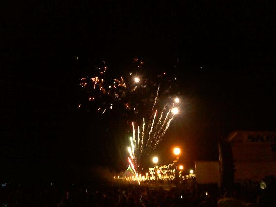

| 新星☆美少女ハッカー☆ミメイル The great beauty hacker Memail! | |
| MIRAIX | |
| Macrocosmos Universky (2018) | |
偉大なる
美少女ハッカー
★ミメイル
The great beauty hacker memail
＊ＭＩＲＡＩＸ＊
スラバヤという名のハッカー青年がこの世には存在する。彼は自分がいつ、何処で生まれたのか、家族はいるのかさえも知らない。
不確かな身分証明書を抱えながらいつも自分の存在に疑問を抱えながらずっと一人で生き来た。誰がくれたのか、物心着く前から手にしていたその不確かな身分証明書には「スラバヤ・レイジ・ウォンカ」と記載されている。
ある日病院の世話になった時、身体を調べたドクターが言ったのだ。君の身体はこの身分証よりも一歳若い。このＩＤはフェイクじゃないのかね？
これから自分は何処へ行くべきなのか。スラバヤは考える。そして地球の何処かに眠っているかも知れない自分に関する情報をいつも探し回っている。
ハッカーはとてもクリエイティブな存在である。データ侵害のニュースを聞く度、ハッカーが自身で得た情報で何をするつもりなのか、知りたくなる。
スラバヤが持っているフェイクＩＤの中の自分、現実の自分。スラバヤの身分は誰かに盗まれてしまったのか、それとも誰かと入れ替わってしまったのか。
本当の自分を探し地球上を旅して回る。 孤児のスラバヤは運良く？大会社のエンジニアに無償労働者として拾って貰った。
いつの頃からだろうか。ハッカーとして生きていく術を得た自分に問い掛ける。
ある時期、会社に派遣されて行った先の国で会社と連絡が途絶えた。理由は分らない。スラバヤはまた一人に戻ってしまったが、会社で得た自分のスキルを活かして個人で仕事を得られるようになった。
スラバヤに仕事を頼んだクライアント達はスラバヤの並々ならぬ才能に不信感さえ覚える程だった。周囲に恐れられる中、スラバヤはとある映像を目にした。
美しい歌姫の少女がラップトップコンピューターのテレビＣＭに出演している映像。自分の事も、あの子の事も、もっと知りたい。スラバヤのハッカーとしてのスキルはそんな欲望を叶える為に止め処もなく増大し続ける。
映像の中の少女の名前はミメイル・プリリッサ。マクロコスモスユニバースカイという名の宇宙楽団の出身で美しい歌声とその絶大なる歌唱力はスラバヤの全てを虜にした。
だが生まれた時から独り部隊のスラバヤの周囲にはスラバヤを蹴落とそうとする敵は多かった。自分の身を守る為には更なる技術力を蓄える必要があった。だが時々そんな戦いの毎日から逃れて地球から消えて無くなりたいという衝動にさえ駆られる。
ふと気付くと無意識にミメイルの歌を聞いているスラバヤ。彼女の歌は消えたいと願う自分の考えを不思議と一掃し未知への好奇心を高めてくれる。
「み、ミ、ミメイルさぁぁぁあん......」
スラバヤはミメイルの事を想像しながら今夜も眠りにつく。
独り部隊隊長のスラバヤはふと自分の分身とも呼べる様な仲間が欲しくなった。そして自ら移動型大容量サーバー兼ＡＩロボットのピギャンを創り上げた。ピギャンに人権を持って貰う為、ピギャンを自分の養子としてシティホールに登録する事にした。秘密保持の為、言語機能を敢えて植え付けなかったが、ピギャンはスラバヤと真の意味でコミュニケーションが取れる唯一の存在である。
そんなある日...
スラバヤの手元に一通のオート・メールが届いた。そのメールを見るなりスラバヤは仰け反った。
それもそのはず、何と画面にはあのスラバヤの憧れ、ミメイル・プリリッサが映っているではないか！
しかしその直後にあるメッセージが流れた。
「We are inviting you to our super star project team. Click the video link below.」
どうやらスラバヤを何らかのプロジェクトに誘い込みたいといった内容らしい。この謎のメールの差出人の名と送信先が不明と出ている。全くの匿名でメールを送り付けて来るとは一体何者？
だがメッセージ代筆人として小さく名義が書かれている。
"エルククローナⅣ"？
エルククローナⅣ とは何処の誰だ？とにかくリンクをクリックして送られて来たビデオを拝見しよう。
ビデオから聞こえて来るのは聞き慣れないはずの外国語...なのにスラバヤには何故か、その意味が理解出来る。理解出来るという事は以前聞いた事あるからであろうに、一体この奇妙な感覚は何なのだ？
『初めましてスラバヤ・レイジ・ウォンカ。こちらはエルククローナⅣ。今回貴方に依頼したいのは我が国、ボヘルツェビーナ連邦にある国家機関情報の整理。現在ボヘルツェビーナでは優秀なエンジニアやプログラマーを募集中。短時間で確実に業務完了可能な人材には多額の報酬をご用意。』
これが謎のメールの概要だった。
「ぼ、ボヘルツェビーナ連邦と言えば...い、今独立運動をし、している政治不安定な、く、国...で、でも、どど、どうしてミメイルさんの映像が冒頭でな、流れたので、でしょう...。」
スラバヤは頭の中を捏ねくり回して考え込む。
スラバヤはボヘルツェビーナ連邦入国に関して少し調べてみる事に。
ビザ申請諸費用が中々桁違いに高額だ。政治不安でこれでは誰もが遠のくであろう。だが依頼人によるとそんな諸々の費用はカバーしてくれるらしい。何故ここまでして優秀なハッカーを自国に呼び寄せたいのだろうか。
スラバヤはまっすぐ立てた人差し指を口にくわえボーっと更に考え込むが...。
スラバヤは突如両手を突き出し幽霊のポーズで言った。
「if(ans == "y" || ans == "y")
い、依頼人に返答をする前に、ぼ、ボクのルートから数人の情報屋さんやブローカーさん達を、あた、当たって、もっとボヘルツェビーナ連邦に、つ、ついて調べてみる事に、しま、しましょう。」
スラバヤは現在、ネオパンゲア南西国という気候が温かく平和な国に滞在している。そこでこの国のＣＩＲＯ
(Cabinet Intelligence and Research Office)の包囲網を搔い潜り、政府のブラックリスト入りまで果たした一流の情報屋と落ち合うまでにこぎつける。本当に欲しい情報へと辿り着くにはこの先へと突破しなければならないが流石のスラバヤでも易々と一国家情報網に侵入する事は困難だ。うっかり足跡を辿られない様に瞬時にその場から逃れ、足跡を閉じた。
スラバヤは職業病か、幽霊の手付きのまま自宅兼アジトである港倉庫から外へ出てせっせと情報屋との待ち合わせ場所へと急ぐのだが...。
「わわ、忘れ物......。」
スラバヤは再び倉庫の中に入り壁に掲げられた歌姫ミメイルの電子ポスターにキスをしてから再び外に出た。
さて...スラバヤがそそくさと辿り着いたのはそれなりに規模の大きなとあるハッカーズバー。
自分のＩＤをスキャンしてバーの中に入ると店内はキナ臭く薄暗いが思ったより騒がしい。どうやら今夜はハッカーズライブというイベントが行われる様だ。
スラバヤは店内をグルリと一周し辺りを見回すが情報屋らしき人間の姿はまだ見当たらない。
スラバヤは自分で作った半透視グラスを付け、もう一度念入りに当たりを見渡す。
カウンターではスリムだが妙に体格の良いハンサムな男が酒を飲んでいる姿が見受けられるが...。
ジャケットの裏には拳銃が隠されているのが薄っすらと見える。
あの男性...
スラバヤは特殊携帯を取り出し男の姿を遠隔スキャンして簡易プロフィールを映し出す。
政府関係の何らかの特殊機関に勤めている男の様だ。
そう言えば...スラバヤはネオパンゲア南西国の国家情報網に入り込んだばかりだ。もしもその事実の一部でも勘づかれたのだとしたら...彼がＣＩＲＯ特殊内閣捜査員だという確率が非常に高くなる。もしかして先程一戦交えた相手じゃないだろうなあ？スラバヤは思った。
実際に会った事は無いが、スラバヤが情報をゲットする為の何らかの活動を行う度、内閣調査室のサイバーガードマンに出くわす。そして何度か攻撃まで受けている。
今目の前に佇んでいる体格の良い、いい男が政府関係者だとしたら...ここで実際に会うのは非常に不味い。
スラバヤは店を一旦出ようかとも思ったが、それではせっかくこぎ付けた情報屋との待ち合わせ時間に間に合わなくなる。スラバヤは決めた。
そして何を思ったのか、何故かその男の隣に腰掛けた。
「はは、初めまして、す、スラバヤと、も、申します...お、お名前は？」
しかも事もあろうに自己紹介までしてしまう。
リキシーがあまりにもいい男なのでスラバヤにとっては少々空しいが、いつもテクノロジーで足を取られるので、男の身元をローテクに、率直に聞き出す事にした。
（しし、しかしムカつくほどの色男で、ですね...。ここ、この人には憧れのミメイルさんと接点を持って欲しくない...。）
スラバヤが一人悶々と怒りを覚えていると男は怪訝そうにスラバヤの表情を伺う。
「君、大丈夫かい？」
男は不可解なこのスラバヤと名乗る男に鎮静剤を手渡した。
「ご、ご親切に...あ、あの...お名前は何と？」
スラバヤは悶えつつも男の名を尋ねる。
「何故君が僕の名前を知りたいのかは解らないが...僕の名はリキシー。本名かどうかはご想像にお任せするよ。」
ここはネオパンゲア南西国のメトロポリス。平和な国とは言えそれなりに大きな国だ。色んな人間がいるだろう。スラバヤとリキシーは互いに警戒しながらもゆっくりとカウンターで酒を嗜む。
このハッカーズバーは情報屋が指定して来た待ち合わせ場所。確か情報屋は入り口から３３列目のシーリングファンの真下。パーティションで区切られた角のテーブルに座っているらしいが...スラバヤはリキシーに会釈をしてから、情報屋に指定された席へと移動した。しかし何とその席に居たのは...
「スラバヤさーん、あたしラピ！８歳の大人の女！会いたかった！私を抱きさらってー」
その幼い甲高い声と幼い姿の持ち主は明らかに幼女だ。
いきなりスラバヤに飛びついてスラバヤのホッペにキスしようとしたがスラバヤはそれを制した。
「ぼ、ボク幼女と、な、何かしようとは、おも、思いません。ぼ、ボクを大っぴらに犯罪者にさせようとしないで下さい。」
スラバヤはいきなりの展開にその場を離れようとするが...。
「かわいい坊やねー、私にハッキングゲームを教えてくれない？私超初心者なの。」
妙に高身長のパープルヘアのバーテンダーママがクネクネしながらスラバヤに近付いた来てスラバヤをその場に圧し留めた。その後、店の奥から用心棒らしいガタイのでっかい男二人がスラバヤの腕を掴みその席に椅子に座らせた。
「わわ、分かりました、に、逃げませんよ。」
スラバヤは仕方無くパープルバーテンダーママにパソコン指導を始める。
「ええと、これどうやって開けるのかしら？」
折り畳まれたラップトップの開け方すら知らないパープルバーテンダーママ。
「え、ええ！？そそ、そこ、そこから教えなければならないんですか...？？
い、今まで、よく生きて来られましたね...。」
スラバヤは髪をグシャグシャして頭を抱えた。そんなスラバヤを見つめながら幼女ラピはニコニコしている。この幼女が情報屋？スラバヤは少し様子を見ている...。
その時何やら店内の音楽がセクシーに変化しバーの奥から怪しい光が漂い始める。
何と！
ハッカーズバーの巨大ステージでは無数の美女達がダンスを始めた。
今夜はライブハッカーの大舞台だ。その為、闇で活躍している世界中のハッカー達がわんさかと集まって来てこのイベントを盛り上げようとしている。
実はあの美女ダンサー達も駆け出しのハッカーらしく踊りながらもヴァイオリンやギターなど、様々な楽器型パソコンで何か打っている。
「驚いたろう？」
先程挨拶をしたばかりのリキシーが微笑みながらスラバヤの所にやって来た。一体どういう風の吹き回しだろうか？
リキシーの爽やかな笑みはハイスペック３ｋ男そのものだ。しかしスラバヤにとっては狡猾、巧妙、高圧色でしかない。
すると先ほどの幼女ラピが、リキシーを興味深々にマジマジと見つめ始める。
「スラバヤ君、誰かと待ち合わせかい？その人が来るまで良かったらこの僕の相手でもしていてくれないか？」
リキシーが指をパチンと鳴らすとパープルバーテンダーのママがリキシーにウィンクし、スラバヤの元にこの店で一番のハッカリキュールが一杯サーブされた。
そしてリキシーは自分のグラスとスラバヤのグラスを掴み上げるとカチンとグラスを鳴らし乾杯した。ラピも負けずと乾杯に参加しゴクゴクとグラスを飲み始めるが...スラバヤはグラスを開ける幼女にギョッとする。
「ああ、この子、話しによると常連らしく飲んでいるは、いつもノンアルコールらしい。曲がりなりにもハッカーの一人だから入店を許可されているみたいだ。」
リキシーは軽く言ってのけた。
スラバヤは妙な気分だがリキシーの情報収集力からしてかなり周囲の状況を把握していると見た。
「ところで...どうだろう。」
リキシーが短く切り出す。
「な、何でしょう？」
スラバヤは戸惑いながら質問を返す。
「いや、君、ミメイルって聞いた事あるかい？」
リキシーはグラスをグイと飲みながらスラバヤを流し眼で見る。
「！！！！？＃＄％＾Ｔ」
スラバヤがジリジリとリキシーから遠ざかると、リキシーは若干蔑むようにスラバヤを見る。
「僕は仕事柄、人々の出入りには目を見張っていてね。」
リキシーはスラバヤの姿をスキャンする様に見遣る。
「今夜はこのハッカーズバーのＳ級ＬＩＶＥプログラミングナイトだ。数々のショーがあるからチンピラがバカ騒ぎ目当て多く集まってくる様だが、やはりその中でも凄腕のハッカーというのは一応この様なイベントにも目を見張っているらしい。」
リキシーは薄らと微笑む。
「は、はあ...。」
スラバヤはミメイルの名を出して来たリキシーという男をついつい睨んでしまう。一体何を考えているのか。
そんなスラバヤの気持ちを余所にハッカーズダンスショーは時間と共に更に過激さを増し、爆弾エフェクトまで爆発する始末。
だがスラバヤは出来るだけ平静を装う。もしやリキシー...内閣調査室、及び情報操作室の諜報員なのだろうか。スラバヤは今頃やっと本格的に居心地が悪くなって来た。
「ハッ、派手な演出だ...。スラバヤ君...最近は世の中の物騒さに拍車が掛かっているようだね？」
リキシーが困った顔で笑いながらスラバヤに確かめる。
「はは、はい...」
スラバヤは一瞬硬直した。
「ところで、こんな話は知ってるかい？とある男刑事の話...。そいつは実は過去にここネオパンゲア南西国に侵入して来た、某国からのスパイと少しばかりやり合った経歴があるんだ。」
黙り込むスラバヤにリキシーは続けて話し込む。
「ところで、その国に侵入して来たスパイと裏政府の大変な美女だった。彼女はネオパンゲア南西国のありとあらゆる機密を盗み出そうとしていた。相当な悪だったそうだよ。信じられるかい、君、今時裏政府などという組織が存在するなんて。世界を一秒でも早く統一しようというこの時代にだよ。」
リキシーは酒を飲み続けるが酔ってはいない様子だ。
「スラバヤ君分かるかい？他国を情報攻撃して置いて独自の文化が、歴史がどーだとか自分達の誉れをほざくなどそれこそ物事の価値を見誤っている。地球は一つであるべきだ。その刑事は頭を抱えたね。そしてどうにかしてその犯罪に踏み入ったスパイ達のしっぽを掴みたかった。
だから仕掛けてみたらしいんだよ、ネオパンゲア南西の国家機密に近づこうとする美女スパイから逆に情報を得る為にちょっとね...」
「？？？」
リキシーの歯切れの悪い言葉にスラバヤはハテ...？両腕を組み頭を傾げる。
「偽装恋愛を通じて...。」
それを聞いた途端スラバヤは、ははあ...と思わず感嘆とも言える溜息を吐いた。
｢勿論簡単な事では無い。相手のスパイ美女も直ぐに刑事に気を向けては来ないし、刑事だって幾ら相手が絶世の美女だったとは言え自分の心をも騙してしまうのだからね。無理はあった、けど...刑事は任務に対して、忠実であろうとすればする程、次第に本気になって来て...何時しか偽装を超えて...。相手スパイ美女だって最初は警戒していたのだが次第に.........だが最後にその刑事は国家の使命の為に彼女の想いの全てを裏切り彼女ともおさらば...ジ・エンド...。」
リキシーはスラバヤに顔を背けながら話した。
スラバヤは言葉が全く...出て来ない。
「まあだが刑事は、その成功一件以来似たようなスパイ騙しの仕事が２、３度舞い込んで来てしまったらしく、勢いでまた、引き受けたりなんかしてね。最初の事件同様成功したそうだよ。」
それを聞いた途端スラバヤの脳内は完全にバグった。その美女って誰だ？
スラバヤは電源が落ちたコンピューターの様に白々と沈黙した。
「いぇ、いい...ですねええ、国家を守る使命の元に国家予算から報酬を受け取りながら各国の美女達と......。」
スラバヤは心底羨ましいとは思わなかった。
「いやね、スパイの相場は美人と決まっている、使える武器の威力が違うからねえ。君は今その刑事を羨ましいと思っているだろう？だが刑事のセンシティブな苦労は一般の男には解らんだろうな。アイドル画像や映像などを見ながら恋に恋している間が一番幸せだという事だ。美女の本性を知るほどに痛い思いをからね。」
リキシーの話の展開にスラバヤ自身の電源が入らずにいる。
「あ、あの、何の話をしているのです？み、ミメイルさ、さんとは...。」
スラバヤは多少震えながらリキシーに迫る。
「ミメイル...。まあ、スパイ解除の仕事は相手がこちらに興味を持ち、好きになって貰う必要がある、言わば賭け事の骨頂みたいな職務だよ。」
リキシーからスラバヤへ冷ややかな視線が送られる。
「まま、まさか、その刑事、み、ミメイルさんとっ！！」
スラバヤの怒りが爆発した。
「り、リキシーさん、、み、ミメイルさんは、そ、その美女スパイの一人...。」
スラバヤの言い分にリキシーはこれ見よがしに深―く頷く。
「なーんてね、美女スパイとミメイルは関係無い。」
リキシーのその一言でスラバヤの心は天国へと昇った。では何故ミメイルの名を口にしたのか。リキシーに追及しようとしたが彼は急にしんみりとした態度になりスラバヤが開口した瞬間拒絶を示した。
ふと横を見るとベロンベロンに酔っ払った幼女ハッカーのラピがぐったりと寝そべっている。
「ああっ！ノンアルコールと言いつつ、もしやこんな小さい子供に本物のお酒を！？」
スラバヤが慌ててラピを介抱しようとするが...
「何よ何よ！！ラピみたいな若い女を放置して他の人なんかと...！！」
ラピは急に自棄に暴れ始める。
「な、何て酒癖の、わわ、悪い...！」
スラバヤが慌ててラピから離れるとパープルママまた近付いて来て言った。
「いやだ、その子は酔っ払ってなんかいないわよ。ただ単にもう眠たいだけ...後でドライバーに頼んでこの子の家まで送り届けて貰うから安心して。」
？？良く見るとあのパープルヘアのバーテンダーママは男だ。しかし母性愛溢れる彼にスラバヤは取り敢えず安心する。
さて、メインのハッカーＬＩＶＥプログラミングが巨大スクリーンで公開される中、スラバヤはもう３０分近く店内で待っている事に気が付いた。
（まま、まさか、ぼ、ボクがリキシーさんと話込んでいたから、きき、気付かなかったとか...）
スラバヤは少々焦る。
しかし今夜のＳ級のプログラマーたちは相当の腕前だ。リアルタイムでソフトウェア制作を見せている。何たるスピード、何たる情報処理能力。
先程まで踊り狂っていた美女達がステージ上で檻の様な閉鎖空間の中に閉じ込められたり、十字架に張り付けられたりしている。凄腕のハッカー達はありとあらゆる言語を使いこなしながら制限時間内にプロテクトを掻い潜り、閉鎖空間から美女達を救い出せるか、なども競い合っている。
「はっやくしないっぃと、美女達が溺れ死んじゃいまっすよー
Ｂｒｅａｋｉｎｇ Ｂｒｅａｋｉｎｇ♬」
店内の屋根が開き、美女達の入った閉鎖空間や張付け十字架は、少しずつ上昇して行く。
ハッカー達が今夜最後の一代ページェントだとばかりに美女達をクラッキングスキルで救い出そうと必死だ。スラバヤはそれをジーッとボーッと指をくわえて見つめている。
「ちょっと！ただ傍観しているだけ？それともフヌケなの？」
幼女ハッカー・ラピが突如目を覚ましバー内のテーブルに仁王立ちしてスラバヤとリキシーに向かって叫ぶ。
「あ、あの、お家の方が心配なさ、なさいますよ。」
スラバヤはいい子を諭す様に言うが、
「だったら今夜ラピがここに来た意味をもっと深めて！！」
とことん小生意なラピにスラバヤは辟易する。
しかし...このショー......もしかして本物...？美女達が本気で苦しみ始めている。
「た、助けてぇ！早くぅ、苦しい！」
誰も美女達に掛かったパスワードを解除出来ずトーチャーアタックが美女達を苦しめる。
「不味いな、このショー。検察チームを呼ぶか...」
リキシーはポケットから携帯を取り出し何処かに連絡を入れている。
「誰か...は、早く...」
美女達が次から次へと力弱く項垂れていく。
あまりにも危険だ！スラバヤは我慢出来ず遂に立ち上がった。
「わわ、分かりました！...」
そう言ってスラバヤは空いているコンピューターシートに飛び乗りキーボードを叩き始めた。
「おい、あの今乗ってきたばかりの男、何やってんだ？」
周囲の客達が騒ぎ始める。
「もしかしてＣＭＤを作ってんじゃないか？」
別の客が恐る恐る呟く。
「CMDって？コマーシャルドキュメンタリー？」
ラピが慌てて聞き出そうとすると、
「ちゃうちゃう、CMDは
CrackMeDarling。
つまり、プログラマーのリヴァースエンジニアリング、もしくはバックエンジニアリングや逆行工学を介して人工物体を分解する為の為のソフト"私をクラックして❤" の事だ。あの男は今、この美女達を捕えたトラップに合わせた仕様のＣＭＤソフトウェアを即席で作ってる。ＣＭＤの技術は非常に破壊的で危険だ。
故に近年.........商用のリヴァースエンジニアソフトウェアのアルゴリムはトラックし難く作られている。簡単に物体が破壊される様になればとんでもない武器にもなるからな。だが、この男にはそんなアルゴリズムの難解さなんて関係なさそうだ。地球上あらゆる人工物体の構造をデータ化し、そこからパスワードや美女達の拘束具を原子レベルで破壊しようってんだ！」
「？？？？？♬」
ラピはキョトンとしている。
「つまりだ！ハッカーとして骨頂的動きを見せてんだよ、あの男ぉ！あの手の動き人間業じゃないぞ！」
「破ってるぅうう！バリバリとプロテクションを破壊してるぉーーーーおおおぉぉぉぉぉおお！」
店内が一躍騒然とし始める。
ガチャーン！！
ガチャーーーンン！
牢や十字架に囚われた無数の美女達に掛けられた闇のプロテクションと拘束具は全て一気に同時解除され、雁字がらめだった美女達の肢体が今、自由に動き出す。

店内にはコングラッチュレーションの祝杯が上がり祝いのスモークが焚かれ、音と光と花火が勝者スラバヤを称賛する。そして無数の美女達はそれぞれスラバヤに抱き付き、ハグやキスのプレゼントをしようとするが...
「あちょ、ちょっと待って下さい！！ぼ、ボクには、ミメ、ミメイルさんという人が...！」
スラバヤは真っ赤な顔の焦りモードで舞台から掛け降りる。
「ちょっとー、スラバヤさん！ご褒美はこのうら若きラピがあげるわよ！」
ステージ上でラピや美女達に追い回され、スラバヤはワーワーギャーギャーと悲鳴を上げながら逃げ回っている。
「まさかあの男...しかし...フッ、あの様な男がもてはやされる時代なのか？世も末だな...」
リキシーは笑止の沙汰と言わんばかりの冷や汗表情だが、上目遣いスラバヤ達のステージをやや監視気味に凝視している。
未だバーの隅々まで駆け回るスラバヤの目に一瞬何か映った。
「！？」
スモークの中から妙なでっかい扇を身に付けた変な格好の少年がスラバヤに向かって何か合図している。
「おめでたうございます、スラバヤ様。」
その少年はスラバヤが気付いてくれたと同時に装飾だらけの頭を深々と下げた。
「ああ、あの...貴方は...？」
スラバヤが突然停止すると美女達はスラバヤの背中にドミノ式にぶつかり停止した。
スラバヤが驚き顔で少年に近づき人差し指でポイントすると少年はすかさず頷く。
「お嬢さん方、少しお席を外して頂けませんか？」
扇衣装の少年の一言で美女達は不機嫌そうになる。だがスラバヤが頭を下げると皆仕方無さそうに舞台の奥へと消えて行った。
「さて...其れがしの名は街の反闇情報システム屋。以後お見知りおきを。」
扇の少年がそう挨拶をする。
「そ、それが、あ、貴方の、肩書きなんですか...」
スラバヤは扇衣装姿の街の反闇情報システム屋と名乗る少年に若干警戒する...。
「名前なんてどうでも良いのですぁ！どうせ其れがしなんて情報渡せば出番終わりなんですかるぁぁああ！」
何とも投げやりな態度の情報屋なのでスラバヤは相当心配になる。
「面白そうじゃない、スラバヤさん。聞いてあげなさいよ。」
ラピがニヤニヤしながらスラバヤの背中に乗ってくるがスラバヤはラピをハッカーズバーのお見送りドライバーにパスした。
「承知です、ではこのお嬢様をご自宅へとお送りさせて頂きます。」
「ちょっとぉーーー！スラバヤさん、覚えてなさい！ラピの若さを甘く見ないでよ！」
幼女ハッカー・ラピの遠吠えが聞こえるがスラバヤはこの際お構いなし。
「僕も興味あるけどね...」
リキシーがスラバヤ達にゆっくりと近寄って来る。
「そ、そんな所に、いら、いらっしゃったんですね...。」
スラバヤは更に警戒しまくるが街の反闇情報システム屋はこう言った。
「いいですよ、この際。其れがしはこの色男さんにも情報を売って差し上げたい。」
情報屋はかなり、がめつい。ますます不安になるスラバヤ。
「はは、ハイハイ、しかしですよ、情報は機密だから価値が、あ、あるのです。ぼ、ボクが二人分、はら、払いますからボク達だけでお話しま...」
スラバヤがそう持ち掛けた途端、目の前にマイクロチップ入りのカードが置かれた。
「これで情報価値分だけ引き出せばいい。」
リキシーが国防ご用達のビットコイン兼キャッシュカードを情報料として提示して来た。
「ひきょ、卑怯ですよ、リキシーさんっ！！」
スラバヤはあたふたする。このキャッシュカードのロゴ...。普通の人間は知らないものだが、これは政府関係者の物だ。ハッキング歴のあるスラバヤには見覚えがある。
「何の事だい？君の情報料を一部負担してあげるんだぞ。さあ、遠慮なく、反闇の情報システム屋君！」
リキシーは一歩も引かないどころかスラバヤに取って代わらん勢いだ。
「其れがし、どう致せば良いのでさう？」
反闇のシステム屋はオロオロとしている。どうせスラバヤがボヘルツェビーナ連邦で仕事を始めるとなれば警察、ＣＩＲＯ、それに内閣調査室諜報部の連中は動き始めるに決まっている。
「どど、どうぞ...。」
スラバヤの了承を得て反闇情報システム屋はそろりそろりと話を始めた。
「えーとでさねえ、ボヘルツェビーナ連邦に確実に入国して安全に暮らす方法を知りたいのでさうよね？？お二方。」
反闇システム屋がもったいぶりながら確認をしている。
「そそ、その...」
スラバヤはリキシーの反応を気にしている。
「はっ！スラバヤ君はボヘルツェビーナ連邦へ入国する気だったのかい？それこそまさに僕が最初のスパイ美女をブタ箱へと追いやった僻地じゃないか！」
リキシーは驚愕と、そして半ば郷愁さえ感じているかの如く言い放った。
「ぼ、僕とは...？と、とある刑事さんの話ではなかったんですか？？？？い、嫌ですね...こんな方がミ、ミメイルさんの事を知っているなんて...」
スラバヤは超軽蔑視線を嫌味なまでにリキシーに送る。
「スラバヤ君、君の様なマニアックなタイプの男にそんな目つきで睨まれる覚えはないのだが？」
リキシーの言葉にスラバヤはそれなりにショックを受けた。
「そう言えば、ミメイルだがね、危険らしい。何がかは知らないが、スラバヤ君、君は近付かない方がいい。」
リキシーが突然ミメイルについて言及する。
「ぼ、ボク、み、ミメイルさんが危険だとは、お、思いません。り、リキシーさんはボクと、てて、敵同士な関係にでも、な、成りたい、おつもりなんでしょうか？？」
スラバヤは一瞬冷静さを失い、恐る恐る攻勢を掛ける。
「何を！先ほどのクラッキングショーを拝見して、君とは友好関係を築きたいと思ったね。」
リキシーは不貞腐れた表情で言った。
「は、はあ...」
スラバヤは脱力感と共に頷く。リキシーはミメイルについて何かを知っている様だが何かは教えてくれないつもりらしい。 何だかよく分からないがリキシーには今後とも十二分注意しなくては...とスラバヤは思った。
「と、ところで随分話が逸れて行った様におも、思えますが、ボヘルツェビーナ連邦に、さ、際して...」
スラバヤは話の流れを何とかバックオントラックさせ反闇情報屋に話を続けさせる。
「ああ、さうでした、さうでした。ボヘルツェビーナは政治不安で入国難関なお国です。スラバヤさんの場合、クライアント様から特別な招待状メールを頂いている様ですが、それでも十分とは言えません。そこでちょっとした裏技をお知らせしたいと思いませう。」
反闇情報システム屋はタブレットを開いた。
「これが移民ウェブサイトでさうが、実はこのサイト隠れコマンドがございまして、そこからビザ申請を行って頂きます。ここと、こことこことここを順番通りにクリックして頂き、現時点で秘密裏に配布されている、このシリアルナンバーを飛び出たボックス内に入力され、後に難関ですが、第一サーバーに入り込んで頂き、ページの、このボタン情報を改ざん、それから画面の検索ボックスの中に//Develop Computer Virus Using CCC to Destroy Files
とご入力頂き、今からお渡しする特別司令プログラム内臓の画像を個人情報入力画面で添付して頂き、タッチスクリーン画面の全域を舌で舐め舐めすると現れる申請と書かれたボタンを押して頂きます。その直後に幾つかボタンが飛び出てきますが、「LOVE YOU elif, I want you elif
Hack you, lambda.」
と表記されているボタンのみを１０８回押して頂きます。これらの手順を一順の狂いなく実行して頂きますと、ほぼほぼビザが発行される仕組みになっております故...。」
反闇は自分の提供した情報に胸を張り、扇衣装を翻し決めポーズを見せた。
確かにこれで本当にビザが即発行されるのならこの情報は相当な価値があると思われるが...。
「そんなゲームの裏技みたいな事、信じられるのかい？」
リキシーは怪しみの視線を反闇情報屋にたっぷりと向ける。
「この方法を試したビザ申請者は今まで１．５人。皆様成功なされておりませ。」
反闇は成功例のデータを表示させ情報の信頼性を高めようとする。
「１．５人って、結局１人だけって、こ、事ですよね？０．５の方は、ど、どうなさったんですか？」
スラバヤは慌てて情報屋に尋問する。
「０．５の方は、ビザ申請に成功はしたんですが、移動中の飛行機が謎の空中爆破に合いなされ、入国までには至りませんでしたとさう。」
スラバヤとリキシーは色素を失い静止した。
ここ、今回の情報料、せ、成功報酬にしては、い、頂けないでしょうか...？」
スラバヤは商談の基本、ネゴシエイトモードに入る。
「スラバヤさん、其れがしをお呼び頂いた時点で決済は９９．９９９９％完了してしまっておりますでせう？」
反闇は手をひらひらと舞わせお金が飛んで行く様な動きを見せる。
「そうだともスラバヤ君、それに僕も情報料を支払っている。この情報が役立たずな時はタダでは済まない事くらい反闇君も理解している筈だ。」
リキシーが指をバキボキと鳴らしながら言うと、反闇情報システム屋はこれはボスから頂いた情報なので...と言い、情報料を抜き取り煙幕を焚いて姿を眩ませてしまった。店中が煙だらけなのでスモークディテクターがリンリンと鳴り響き消化モードで店内は大雨の水浸しだ。その上消防車は驚くスピードで到着し店内に向け消化作業を始めた。
「しかし現世はどいつもこいつも怪しい奴らばかりだ...。」
消火剤の泡にまみれながらリキシーがうざったそうに一張羅のスーツを気遣いながら言った。
泡水浸しのスラバヤも心の中で思った。
（り、リキシーさん含め、そ、その通りで、です...。）
「と、とにかく家に戻ってこのビザのアプライ方法が使えるか試して、みま、みます...」
スラバヤはそう言って立ち去ろうと出口へと向かうと、リキシーがスラバヤの後に付いて来ようとしている。しかしスラバヤは自慢の俊足で大急ぎで帰路へ。今はリキシーを撒いたが、まあ、また何処かで再開するであろう。
何時しか夜のメトロポリスの街並みは先程のハッカーズバーの店内と同様雨で包まれている。ネオンの光がキラキラと地面に反射して綺麗だが何だが光が鮮明すぎて脳神経を刺激し過ぎる。
スラバヤは混迷した気分でトボトボと一人悩み歩く...。
「たた、ただいま...」
スラバヤはずぶ濡れでの港倉庫のアジトに到着した。
「ピッィッポッパッ？」
ＡＩサーバーロボのピギャンがタオルを持って来てくれた。
「あぁ、ありがとうございます...。」
スラバヤはタオルを受け取る際、そっとピギャンの手に触れピギャンを凝視する。
「い、いえ、な、何でも、あり、ありません...。」
スラバヤは大急ぎシャワールームに駆け込んだ。
スラバヤはシャワー後、直ぐビザ申請を開始。スラバヤは反闇情報システム屋が教えてくれた手順を全て記憶しており、順々にこなして行く事に。
情報屋から得たボヘルツェビーナ連邦移民局のシークレットな入口を探し出し早速試行する。決められた箇所と順序でコマンドを操作し隠しキーを入力す、キーも情報屋から別料金で買ったものなので当然使えるはずだが、でなければ情報屋は二度とこの手の商売では成り立たず、情報屋職を失う事になるだろう。その後、突如ポップアップスクリーンが登場した。キー入力操作時間は１１秒丁度と定められていて、この時間数を超えても足りなくても無駄な操作だとシステムに解釈されてしまうらしい。
（い、一体誰がこ、こんな事を考え...）
スラバヤはミクロ単位の穴にでも糸を通す様な思いで操作を試す。正確な指の動きにより何と一回で成功。
スラバヤはすっと汗が引く思いがした 。
シリアルナンバーを入力し、第一サーバーに入り込む。その途端まるで異空間に入ったかの様に画面の色が不気味に変わる。そこにあるページボタン情報を改ざんして、検索ボックスの中に例の
//Develop Computer Virus Using CCC to Destroy Files
を入力。情報屋から受け取った情報入画像を付加情報入力画面に添付してから一息吐く。
手順のほとんどは終わっている。さて...最後は...
重い決断でもしたくかの様にスラバヤは椅子から立ち上がりタッチスクリーン画面を長い舌で、ベローリベロリと苦痛な表情のまま舐め回す。
すると画面に異常な数のボタンが出現したがその中から、
「LOVE YOU elif, I want you elif
Hack you, lambda.」
とラベリングされているボタンのみを押した。
ガタッ！ガタガタッ！
狂ったみたいパソコンがガタガタと動き始めた。何事かと焦るスラバヤ...。
その時突如画面全体が真っ暗になる。
（まま、まさか失敗では...？？）
真っ暗な画面は群青色のグラデーションに変化し、突如Acceptedという受領を示すポップアップスクリーンとＢＢＦＳという４桁の空港コードが現れた。どうやら裏画面からのビザ申請手続きに成功したらしい。
そこにはここから先の手続きに関するプロセスが記してある。何と出国可能ルートはこの指定空港只一つとされており、ビザ発給への最終面接もそこで同時に行われるとの事。日時も指定されているがこの空港の住所は書かれていない。
「キャッスリーコスモ宇宙空港？？こ、そんな空港このネオパンゲア南西国にあり、ありましたっけ...？」
首を捻りまくるスラバヤだが即座に空港位置情報の調査に掛かる。衛星地図から調べても全く出て来ない。
（へ、変ですね。空港ほどの施設が地図に出ない、な、なんて...。も、もしかしたら地図上への、ひょ、表示を拒んでいる様な場所な、なのかも知れません...。）
スラバヤは地球に存在する全ての空港、プライベートな物まで含めた全１３万個を検出した。（こ、この中で名前の無いのはやはりプライベート用、もしくは老朽化、用済みになり歴史から取り残された物ばかりですね...。しし、しかしこれらにも通り名の様なものはあります...。た、例えば＠＠さんの空港...ミサイル埋没空港...OO社輸送空港、天に一番近い空港...などの様に...。そ、そういった通り名さえも存在しない様な空港...。そそ、そして地図上にはその存在を記さない空港...。）
スラバヤは逆ハックされない様に独自のオペレーションシステムも同時に駆使し一般の人々がアクセスし得ない領域に着々と潜り込む。衛生カメラと地図上のデータを照会し自己の形跡を閉じて、追手から自らの存在と履歴を消し去る。この方法を使用する時はいつもスーパーコンピューター・の相棒、ＡＩロボ・ピギャンの手助けを借りる。もしかして...スラバヤの調査で判明した。この地域は衛星地図には映らない様にある種のバリアーの様なものが張られている。スラバヤは即座にそのバリアを搔い潜る為のシステムを立ち上げ、再度調査に挑む。
「な、何てことでしょうね、衛星の地上スキャンを逃れる為にとんでもないバリアーを、は、張り巡らせて...もうそれが分かっただけでもこの場所は普通じゃ、あ、ありません...あ、嗚呼っ！ぁあそこっ！昨日１３時から３０秒間の間には地上に、進入灯が集まっている場所があ、ある！ね、ネオパンゲア南西国の、内陸部のは、外れ...。一般の衛星地図上には、な、無いのに...。こ、ここは大昔の製造所か何かなどで、でしょうか...？でで、でもよく見ますと...進入灯の他にもナックルヒード・プルフィン社製最新型の航空機誘導アプローチライトシステムやエアロドロームビーコンなどが...。」
普通の人間は空港の灯のメーカーや種類まで把握しないであろう。マニアなスラバヤの調査でこの場所の異質な部分が発覚した。
「か、確実に怪しいですね。過去の遺物に、こ、こんな装備は必要、な、無いはず...。し、しばらくこの場所を張ってみ、みますか...。」
スラバヤは自作のドローン、名付けて"ドローンエンジェルス"（７機で一体とする）を自室の窓から飛ばす準備を始める。
「ぴ、ピジョンＡＲドローン社が開発したボディを使用して、ぼ、ボクがプログラミングを施した、こ、このドローンエンジェルス達はＪＡＶＡＡＰＩからＲＯＳロボットオペレーションシステムお、及びロボットフレームワークとＣの派生系言語、そして、ぼ、ボクのオリジナル言語スラバヤ０ウォンカというごちゃまぜミックスで、ＶＥＲＳＩＯＮ８８８を、く、駆使しています。ドローンエンジェルス達は、ぼ、ボクに情報をもたらしてくれる、ま、まさに愛の天使達です。さあ、ボクの為にあの怪しい航空機誘導等のある飛行場らしき場所を調査して来て、く、下さい...。」
スラバヤの作った７機の小型ドローンエンジェルス達はスラバヤ宅のかすれた色のお茶の間テーブルを離陸し天窓から一斉に飛び発つ。
夜空の月に照らされながら真っ暗な闇に溶け込み彼方へと消えて行った。
（あ、あの怪しげな飛行場と思しき場所は、こ、ここから、や、約１８０マイル...ドローンエンジェルス達の動力が保てる様に風向きを読んで時々自分でも操作をし、しなければ...。）
スラバヤは必死でエンジェルス達を動かし続ける。その後高度１万フィートに達したので一旦操作をオートパイロットに切り替えた。
（こ、この高さまで来れば障害物もす、少ないですし、気体の分子もあまり邪魔にならず、スムーズに飛行してくれる、こ、事でしょう...）
深夜過ぎているので少し睡眠をとスラバヤはベッドにしばらく横になる。
（何だか興奮してうまく、ね、寝付けません...。、み、ミメイルさんの映像を、みみ、見ながら、ゆっくりと、まどろみま、ましょう...
ど、ドローンエンジェルス達よりも、もっと、天使...）
スラバヤはほざいた。
（きゃ、きゃわ、きゃわわ❤）
（ぼ、ボクはアイドルオタクでは、あ、ありません...み、ミメイルさんオタクです...。）
スラバヤは独自で作った誰の手にも届かぬサーバーの中のミメイルに向かって、オヤスミと呟きぐっすりと眠りについた。
夜明けを１時間後に控えた午前４時...スラバヤはふと目を覚ましベッドの上のラップトップコンピューターと睨めっこを始める。モニターには夜中に飛ばしたドローンエンジェルスによる映像がフラフラと左右上下に揺れながら写し出されている。岩場や砂だらけの殺風景ばかりだが鮮明に周囲が見て取れる。
（ぎゃ、逆風が強いのですね...。しかしお陰で予定よりこの地点には３５分早く到着しま、しました...。）
エンジェルスが送信する映像には衛星地図にあった様な最新式誘導灯や機材などは映し出されていない。
（ゆ、誘導灯などが無い...。しゅ、周囲が破壊された様子もな、無い...？）
スラバヤが腕を組み首を傾げながら新たなる映像を待つ。
（よ、よし、ドローンエンジェルスの内、一機を別の地点へと移動させてみま、みましょう...）
スラバヤは１号機を地上へと近づけてみる、すると...。
！！？？
地面から探知機の様な物がニョキニョキと生えて来た。
（ややや...！！ここ、この地点に探知カメラ！？あや、怪しいですね。）
スラバヤのドローンエンジェルスたちは一旦上空へ戻り雲の中に姿を眩ませた。すると...。
突然地上にぼんやりとしたはっきりしない程度の光量だが誘導灯が光り出した。
「ゃ、やっぱり。空港コードＢＢＦＳ・ボヘルツェビーナ連邦は空港カウンシルグループ４で地球の南半球に多いで、ですからね...。ち、地理的に見ても、あ、合っているはずで、です...。せ、設備面から言っても、これがキャッスリーコスモ宇宙空港、ぼ、ボヘルツェビーナ連邦への入り口に、まま、間違いありません！しか、しかしどうしてここまで厳重警戒が必要な、なのでしょうか...。こ、この物々しいまでの警戒...こ、ここはもうネオパンゲア南西国では無いと考えた方が、よ、良さそうですね。れ、連邦の治外法権領域で、ね、ネオパンゲア南西国の法律も効力を、は、発揮していないのでしょう...でなければ、こ、こんな、か、カモフラージュは、あ、あり得ません...。）
スラバヤは可笑しな予感がした。ネオパンゲア南西国や他の国々の人達もボヘルツェビーナ連邦についてはある程度は学習するし連邦自体は地図にも載っている。大体今時代この地球上にある場所から隠れ逃れるのは至難の業。
にも拘らず隠蔽を敢えて実行し警戒を高め、内外コネクションを管理する必要があるとすれば...反乱？デモ？？以前ハッカーズバーで出会ったＣＩＲＯのリキシーも言っていた、スパイ絡み？
（ニュ、ニュースなどでは地球の国々を全て統一する地球帝国の建国に対してそこまで反発的な動きを見せている国々はもはや無いとの見解で、でしたのに...。一体全体何が起ころうとしてい、いるんです...？？）
スラバヤは余程恐ろしさが増して来たのか大好きなミメイルの写真をしっかと抱き締める。
（い、いくらクライアントにミメイルさんの名前を出されても...。い、いえ、しかしま、万が一この仕事を拒否して、こ、この地球上の何処かにいらっしゃる、み、ミメイルさん本人に、被害が及んだり、し、したら...で、でも......）
スラバヤは依頼を受けるか受けまいか決断しかねて来た。そして今回の依頼人の代理人エルククローナⅣが言っていた労働期間を思い出した。
『ビジネス締結期間は約一カ月を予定』
所在は分からないが地球上の何処かにいるミメイルの為にボディガードでも雇ってもらうよう、匿名で警護依頼でもお願しようか...。
スラバヤはそんな事まで考えた。
（がが、外部攻撃とコンピューターなどを介しての内部攻撃を防いで頂けるスキルのあるボディーガード...となれば...）
スラバヤの脳裏には何故か一瞬、リキシーが思い浮かんだ。しかしあまりに嫌な想像に自分の頭を殴ってしまう。
（...そ、それでは、べ、別の危険が......）
スラバヤは入国前から既に重力がのし掛かった様な気分になった。
＊
窓から白い光が差し夜は完全に開けた。
「おお、おはようございます、み、ミメイルさ、さん...。」
スラバヤはミメイルのアイドルデジタルポスターに向かって深々と挨拶をした。
スラバヤはこの先、ミメイルを心配なあまり頭痛がしてきた。
守るべき者が出来てしまうとアングラなハッカーはやっていられないのだが...。
ボヘルツェビーナ連邦へ
ボヘルツェビーナ連邦ビザ申請面接当日。面接地のキャッスリーコスモ宇宙空港で承認されれば即、その足で出国しなければならないという脅威のエレベータールール。後戻りは出来ないどころか、電話一本掛ける時間も与えられない。
スラバヤは荷物を必要最小限にまとめたスーツケースとスラバヤコンピュータ、それにバックアップコンピュータに化けたＡＩロボット・ピギャンを連れていざ審査へ赴く。
なるべく渋滞に巻き込まれない様にと、スラバヤは大急ぎでエアタクシーを呼び付ける。
するとものの１０分ほどで上空からフワリとエアタクシーは地上に降り立った。
ロボット運転手がスラバヤの荷物を車内に運び言う。
「カードの前払いでお願いします。」
スラバヤよりも流暢に喋るエアカーのロボット運転手はそう言って両手を差し出した。
「え、えぇ、で、ではこれで、お、お願いします。」
スラバヤは現時点で最も信用度が高くセキュリティー度合いが高い仮想通貨を通してカードで支払う。
「ありがとうございます。ではどうぞお乗り下さい。」
スラバヤを乗せ空港へと急ぐエアカー。
「飛ばしますからしっかりと掴まって下さい。」
風の様なエアタクシーは混雑した空域でも右へ左へと辛うじて障害物を避け飛行する。
「よよ、よくこれだけの障害物を避けて、と、飛べるものですね...」
スラバヤは車内で頭をゴンゴンとぶつけるがエアタクシーは何物にもぶつからずスイスイと飛行を続ける。
凡そ４時間ほどドライブした頃。とある岩場に辿り着いた。
辺りは例の如く、人も人工物の気配もしない。一見、全く見当外れの場所に見える。
「お客様？本当にこの場所でよろしいのでしょうか？？」
エアタクシーのロボット運転手は地図データとの照合作業を行っている様だがスラバヤはブンブンと首を縦に降る。
スラバヤはさっそうと携帯から信号を送る。
すると突然岩場が砂地に代わり二人の乗ったエアカーが地下へと吸い込まれた。
真っ暗な中突然一筋の灯りがエアタクシーを導く様に誘導してくれる。
付いて行った先にはパーキングがありエアタクシーはそこに停車した。、スラバヤが降車すると、運転手とエアタクシーは突然のトルネードに包まれ地上へと引き戻されてい行った。
スラバヤは暗いホールをトボトボと歩いて行く。暫くすると、格納庫風のドアの前に辿り着いた。そこで再び事前に送られて来たナンバーロックを入力すると格納庫ドアが開く。
「ようこそ、ボヘルツェビーナ連邦入国審査室へ。」
そこは、やたらにダダっ広い、まるで教会の礼拝堂の様な場所。奥に目を向けると、神官風の恰好をして望遠鏡の様な眼鏡を掛けた性別年齢不詳の仮面人、２台のモノリス、二頭のイルカが待ち構えていた。
「さ...スラバヤ・レイジ・ウォンカ。そこの椅子に掛けパスポートとIDを提示して頂きたく。」
仮面神官に言われた通り、スラバヤはパスポートとIDを目の前に浮遊して来た空中トレイの上に乗せる。
「スラバヤ・レイジ・ウォンカ。ボヘルツェビーナ連邦に以下の事項を報告せよ。
①滞在期間
②入国の目的とスポンサー及び会社名
③税関申告書
④滞在先住所とメールアドレス、テレフォンナンバーとドキュメントコールナンバー
⑤当国のサテライトステイツ（衛星国）への訪問予定
⑥持参金と物品
⑦当国での予定所得金額
⑧操縦可能な乗り物とそのライセンス番号。」
仮面神官がスラバヤに尋問すると二台のモノリスと二頭のイルカ達がバイブの様に震え出し、スラバヤの周囲を回り始める。
「はっ、はい、
①たい、滞在期間は約一ヶ月を予定。
②にゅ、入国目的は...ボヘルツェビーナ連邦内のシステムやデータに関するヘルプ。雇い主とビザのスポンサーは エルククローナⅣという方でで、です。
③ぜい、税関申告書はこちらに。
④たた、滞在先はボヘルツェ・ヴィーナス・ホテルで、で、 滞在先住所はRruga Anastas Durrsaku, Durrës 8C6W+V2 Durrës 、メルアド、番号、書類コール番号はこちらで、です。
⑤えぇ、衛星国訪問予定はありません。
⑥じ、持参現金は３０００パンゲア。持参品は洋服、グルーミングキット、パソコン、腕時計、携帯、クレジットカードに身分証類。
⑦ぼ、ボヘルツェビーナ連邦では所得を受ける、よ、予定ですが金額の正確な数字は、ま、まだ聞いていません。こ、交渉とな、なれば５０００パンゲアは、き、期待しますが...。
⑧そ、操縦可能な乗り物はエアカーのみで免許は、ここ、こちらです。」
スラバヤは緊張はしているが信頼を得る為に凛とした態度で挑む。
「それでは最後、スラバヤ、そなたの一番大切な物を一つ教えなさっぃ。」
神官仮面がそう質問を投げ掛けるとモノリスとイルカ達が光を放ちながら踊り出す。
（た、大切な物...？それが入国自体に、ちょ、直接関係あ、あるんでしょうか...。）
スラバヤはふと天井を見上げる。思い浮かぶのは...
「そそ、それは...み、ミメイルさん...です...。」
スラバヤは顔をゆでダコの様に真っ赤に染める。。
「なるほど...そぇ...。」
神官仮面はモノリスやイルカ達を何やらコソコソと内緒話を始めた。
（な、何でしょうか...か...感じ悪いですね...）
スラバヤはビザ申請でプライベートな本心を伝えた事でまるで調味料を入れ間違えた料理で食べているみたいな気分になった。
（なな...何だか妙に苦い気持ちです...）
内緒話が未だ続いているのでスラバヤは審査官一群を三白眼でやぶ睨みする。
神官仮面達は内緒話を突如止め壁の中へと吸い込まれて行った。その直後、ドーム状の天井が開
き床がエレベーターの如く上っていく。
そのドーム天井の先には何と...
小型のシャトル型航空機がいた。スラバヤは手持ちのスーツケースにしがみ付く。
「ここ、ここが地図にも乗らない空港の発射場...ぼ、ボクは入国が認められ、られたんですね...」
スラバヤはシャトル航空機を茫然と眺める。
無事搭乗セキュリティーチェックをパスしたスラバヤは用意された機内シートに座った。その途端、スラバヤは吸盤を全開にした軟体動物みたく機内の窓に張り付き地上に手を振る。地上の何処かにいるであろう憧れのアイドル・ミメイルを思いながら...。
垂直に上昇して行くシャトル型航空機はネオパンゲア南西国の大地を離れ、まっすぐ上空を目指す。地上から見るとその機体の姿はまるで流星、ゆっくりと空に吸い込まれる様に消えて行った。
シャトル航空機は一旦大気圏外へ出る。眩いばかりの青き輝きを放つ地球が姿を現すと乗客達はその光景に思わず感嘆の声を上げた。
その後、機体は水平になり、今度は真っ逆さまに地上を目指す。座席ベルトがズレてしまったスラバヤはシートから外れ、必死で背もたれにつかまっている。
「どっ、どぁっ！どぁあぁあ！！」
スラバヤの声にならない声が響き渡ったかと思うと機体は頭部を上向きに変え既に直立着陸態勢に入るのであった。離陸開始よりたった１時間程の出来事である為かドリンクサービスは購入希望者のみ。しかし着陸まで後残り１９分程という所で機内販売が始まった。客席シートのモニターには、ハイテク機器を始め、洋服、食べ物、乗り物、キッチン用品なえどの販売商品がスロットマシーンの如く映し出される。気に入った症商品が見つかったらモニター上から支払を済ませ空港到着と同時に商品を受け取れる仕組みらしい。
「いぃ、どど、どれも今欲しいとは、思、思えません...。」
スラバヤはあまりの気分の悪さに吐き気をグッと我慢するのが精一杯だった。
「ぜっ、ぜえ、ぜえ...」
シャトル旅客機の垂直降下は衰弱効果を存分にスラバヤにもたらしてくれた。
「ピンポーン、本日もエア・ボヘルツェビーナ航空をご利用頂き誠に有難う御座いましたぁ！予定より９分早い午後４時４４分の到着です。気温は１６度、曇り、湿度は５０％です。なおシートベルトサインが完全にオフになるまではお席でお待ち頂けます様お願い申し上げまぁす。」
機内アナウンス聞きながら窓の外に目を移すと機体がゆっくりと下降していくのが分かる。流石に地面と激突するつもりは無い様でスラバヤは心底安心した。
[Thank you for choosing Air Bohelzheivina!]
美しきフライトアテンダント達がお礼を言って送り出してくれるがスラバヤはすこぶる気分が優れない。平衡感覚を失ったウォンバットの様にフラフラとパッセンジャーボーディングブリッジをよたつき歩くのであった。
（こ、この航空便しか選択余地は無かったな、なんて...）
青い顔をしながらも心の中で抵抗するスラバヤ。
...入国...そこに待っていたのは...。
[Welcome S.R.W.!]
とタイプされたデジタル看板を持った黒スーツに黒サングラスの男の一群と真っ赤なスーツにゴールデンムーン色の髪を上部に丸く束ねたヘアスタイルの女性であった。
「えぇ？S.R.W.、とは、ぼ、ボクの事ですか...。」
スラバヤは彼らに駆け寄って頭を下げた。
「よくぞご無事でおいでいらっしゃったわミスタースラバヤ・レイジ・ウォンカ。先ずはお車でホテルまでお送り致しますわ。」
そしてだだっ広い空港を１２人の黒スーツの男に包囲、もといガードされつつ兵隊の如く行進していくスラバヤ。
「あ、あの...どうしてこんな大人数で移動す、するんです...？」
スラバヤは真後ろを歩くレッドスーツの女性秘書に伺う。
「それは、もちろん。大事なクライアント様ですもの...」
レッドスーツがそう言った途端頭上で妙な音が...。
スラバヤが上を見上げると超巨大なシャンデリアが降って来るではないか！！！
「！！？？？？？」
スラバヤが意を介さず金縛りに合っていると黒スーツの男がバズーカを取り出し即座にシャンデリアを破壊した。
「お怪我は？さ、早く！」
「！？？？？？？？」
スラバヤは訳も分からぬ間に１ダースの黒スーツ男達に車へと担ぎ運ばれる。
「さ、早く車を出して！」
乗ったのは旧型のタイヤ式自動車では無く最新式のエアカー。時速３００キロでフリーウェイを突っ走る！
「あぁぁ、あの、い、一体どうなって...」
スラバヤは訳も分からずスーツケースを抱き抱えるのが精一杯。
「ミスタースラバヤ、お話は後で。とにかく貴方を安全にホテルへとお届けするのが今の最優先事項ですわ。」
レッドスーツの秘書はタイトスカートの中から銃を取り出し、背後から追跡して来るエアカーを撃つ！
撃たれたエアカーはいきなり装甲車に変形し、光砲でこちらを反撃して来た！
「やっぱりね。普通のエアカーならば、とっくに振り切っているはずですもの...。」
スラバヤ達の乗っているエアカーも負けじとあらゆる武器で応戦する。黒スーツ内の二人の男達が運転手として見事なドライビングテクニックを、残り１０人の黒スーツの男達は訓練された武器裁きを見せつけてくれる。スラバヤはアワアワと慌てふためきミメイルの名を心の中で連呼するも敵の正体について考える。後部エアカーの光砲が見事にスラバヤ達のエアカーにヒットし秒速１０横転くらいさせられると、スラバヤは車内天井に頭をドカドカとド突かれそのまま気を失ってしまった。
「ヴィーナスミサイル発射！」
レッドスーツの秘書が叫ぶとエアカーから後方の追跡者に向け巨大ミサイルが放たれた。
しばらくしてスラバヤが意識を取り戻すと...。
「ミスタースラバヤ。大丈夫かしら？ここはホテルの医務室よ。これから貴方のお部屋へご案内するわ。今回の依頼の説明と契約の最終手続き、それから商談などをさせて頂くわ。さ、行きましょう。」
レッドスーツの女性秘書はスラバヤのスーツケースを引きずって手招きをする。よく助かったな...とスラバヤは思った。こうしてはいられない、スラバヤは慌てて自分のコンピューター二台を抱え秘書に付いて行くのだった。
案内されたホテルの部屋は取り分けゴージャスという訳では無かったが、分厚い壁や鉄のドアはセキュリティー上悪くはないとスラバヤは思った。
レッドスーツの秘書は室内の小さな冷蔵庫からシャンペンとグラスを取り出し、スラバヤを見てスマイルした。スラバヤは死にかけたお陰で喉がやたらに乾いていたので何でもいいから飲みたい気分だった。
「取り敢えず無事を祝して。」
レッドスーツ秘書はスラバヤと自分の為にグラスにシャンペンを注ぎ乾杯をしてくれた。半ば二人共ガブ飲みをし、その後にドキュメントを見ながら商談へ。
「今回の依頼、受けて下さって感謝するわミスター・スラバヤ。自己紹介が遅れましたけど、わたくしが依頼人の代理、エルククローナⅣよ。」
このど派手なルックスのブロンドヘア、レッドスーツの女性秘書がエルククローナⅣだったのか...！スラバヤは溜息を吐きながらもゴックリと喉を鳴らし頷いた。
「あら、随分驚いた顔付きね。どんな人物を想像していたのかしら？」
エルククローナⅣは太々し気な口調でそう言った。
「あ...い、いえ...実在するのかどうかも、あや、怪しい...と思った、たり...。」
スラバヤはシドロモドロに目を泳がせる。
「それでよく来れたものね。案外無謀な生き方をして来た部類の人間なのかしら、貴方って...。」
エルククローナⅣは知的な薄い黒縁眼鏡を掛け直しながら呟いた。彼女が小型携帯機のスイッチを押すと目の前にホログラフィックイメージが映し出される。
「ミスタースラバヤの今回のメインのお仕事、それは世界中に存在するあらゆる情報を集め整理する事。夢を食べるバクって動物知ってるわね？
レム睡眠中の人間の潜在意識や夢を食べる空想上の動物。
でもね、バクって本当は実際にいるのよ♥ミスター・スラバヤ、貴方にはこれからバクの様に形にならないような情報さえも集めて頂く。オーガナイズする分類は一応時系列が基本。それから、情報発生の起因、その他並列計算、負荷分散、事故対策を目的としたクラスタリングもお願いね。集めた情報は全て指定のサーバーに収めて２０のパスワードを掛けて頂くわ。」
エルククローナIVはホログラフィーに図形や保管場所の概要をも映し出す。
「に、二重のパスワードですね...。」
「２０よ。」
「...............。」
スクリーンに２とゼロが並ぶ。途端にスラバヤは頭に重りを乗せられたみたいな窮屈な動作をして見せた。
（お、思った以上に面倒な作業み、みたいですね...）
スラバヤはホログラフィーにタッチ操作して報酬情報を取り出そうとする。
「急かさないで、ミスタースラバヤ。そうね...こちらでは如何かしら？」
色々と細分はあるが、一日の最低保証金額は６００パンゲアだった。
「そ、それですと一ヶ月で１８０００、２００００を、き、切ってますね...。過去に数時間で２０００、プラス、す、スペシャル特典付きの報酬を、も、貰った経験があり、ありますせいか、それでは何だか...。」
スラバヤはかなり不満足に唸る。
「あら、今回の仕事の内容だったら破格だと思ったけど...そうね...待って、一日最低８００になる様にボスと交渉してみるわ。」
エルククローナIVは慌てて報酬の再申請処理を開始している様だが...。
「あ、あの...が、頑張りますから一日１０００に、な、なりませんか...？」
スラバヤはかなり強気に出る。
それもそのはず、ボヘルツェビーナ空港に到着した瞬間からいきなり訳も分からない連中から命を狙われたのだから。
「...えと...申し訳無いけど１０００へのアップは厳し過ぎるわ...８５０...いえ、９００では？」
エルククローナIVは必死の形相で瞳を潤まし値切って来る。
「うぅ...うーう...。」
スラバヤはOKするのを躊躇っている。
「仕方無いわ...じゃ、これで...。」
そう言うとエルククローナIVは自身の似合い過ぎる知的な黒縁眼鏡と着こなされたレッドスーツの上着を脱ぎ始めた。
「ぃえ...え、エルククローナさん、ぼ、ボク、には、その...み、ミメ...いや、これからちょっと知人に到着連絡をした、したいのでこの話は一旦これで...。」
スラバヤは麗しい瞳で近付いて来るエルククローナIVから後ずさる。
「ちょ、ちょっと...あ、あぁっ、あぁぁぁああ！」
スラバヤの上着を引っ剥がそうとするエルククローナIV。彼女から逃れようと怯え顔で席を立つスラバヤ。
エルククローナはそんなスラバヤの二の腕を鷲掴みにした。
「ひぃっぃ、ひえぇええええぇぇええぇぇ！」
スラバヤは自分のジャケットを犠牲にしてエルククローナから逃れるが、エルクはしつこくスラバヤに迫って来る！そして二人は部屋中で追い駆けっこするはめに。
「遠慮しないで...ミスター。」
エルククローナIVが執拗に追って来る。スラバヤはベッドの上で追い詰められた挙句、ネクタイをつかまれシャツを半分引きはがされ、ベルトを...。
「わっ、わかっ、解りまし
た！！きゅっ、９００で、お、OKです！。」
遂に依頼者側の提示報酬で承諾した。渋々に項垂れるスラバヤにエルククローナIVは電子サイン帳を差し出した。
「あぁ...、あ、貴方って人は...。」
スラバヤは汚い署名で書き殴った後、ベッドから飛び降りジャケットやベルトを拾い上げた。
「こ、これ以上の交渉は、ごご、ごめんです...。」
スラバヤはエルククローナIVを藪睨みしながらボソボソ不平を述べたが、エルクはニッコリとした。
「さて。ではこれからご夕食をゆっくりお楽しみになって。その後に２時間ほどミーティングよ。」
エルククローナIVはわざわざ紙に印刷された向こう数日のスケジュールをスラバヤに手渡した。
ボヘルツェビーナ連邦での初めての食事。独特の味付けで、甘くじっくりと煮詰められた肉、魚、野菜。数多くのフルーツで作られたジャムと揚げパン、そしてベリーに似た木の実の酒。
一応高級ホテル料理だが、見た目はシンプルだ。味は独特感があるが悪くない。
そしてホテルレストランの防弾窓から見える夜景。ネオパンゲア南西国の様な温かい気候を持つ雰囲気とは少し違う。この地域は昼間と夜の気温差が激しく、一日の間に真夏と真冬がある。恐らくそのせいでだろう、夜間の人気の無さはどの地域よりも格段に上だ。
薄っすらとした街灯りを見ながらスラバヤは木の実の酒をゆっくりと飲み干す。しばらくするとウェイターが食後のおやつにいかがですか？と昆虫の唐揚げを運んで来た。先ほどまでの食事は乙なものだったのに、不気味に揚げられたフライドインセクトにスラバヤは食のセンスの違いを感じずにはいられなかった。
（い、いつの日か、み、ミメイルさんと一緒に食事がしたい...。）
スラバヤは昆虫唐揚げから目を反らし窓の外の夜闇の中にミメイルの素顔を思い出す。
（ぼ、ボクがこんな危険な国に無理して入国したのも、い、依頼メールにあった、み、ミメイルさんの映像の意味を、知る、知る為です...。この後のミーティングで必ずや、な、何故ミメイルさんを出してきたのか、じ、尋問せねばなり、なりません...。そ、その実それだけの為にここに来た様なものですから...。）
何が起こっているのか...。
そう考えるとスラバヤは戦の足しに...とばかりに不気味な昆虫唐揚げを無心で貪らずにはおられないのであった...。
食後、指定されたミーティングルームに入室したスラバヤ。そこはまるで特撮映画の悪の参謀の基地の様だ。
（ど、どなたのご趣味、なのでしょう...）
唯一のお供、ラップトップコンピューターを両手に抱えながらドギマギと辺りを見渡すスラバヤの前に現れたのは先程のエルククローナだIVだ。
「ミスタースラバヤいらっしゃい。Have a seat. From now on, your job is to be a distraction to the Spacefiller satellite destroyers. 我が国の情報衛星兵器 ・スペースフィラーの為、宇宙空間をプログラムで埋め尽くせる程の情報を搔き集めるのを手伝って頂くわ。」
エルククローナIVがそう言うと昼間のボディーガードの黒服の１２人の男達が現れた。スラバヤは思わず椅子から仰け反る。
「ちょ、ちょっと待ってくだ、下さい。話の焦点はやんわりズレてま、ますが、ぼ、ボクの第六感が何かをきょ、拒絶して、してます...。」
スラバヤはラップトップを両手でギュっと抱えたまま出口の方へ身体を少しずつ移動させる。しかし案の定１ダースの黒スーツ達がスラバヤの行く手を阻んだ。
「ろろ、論点を、も、もうちょっとハッキリと仰っていた、頂けませんか？」
スラバヤは最早いつもの冷静さを失いかけている。
「そうだわねえ、でも貴方は既に契約書にデジタルサインしているわよ。如何なる理由でも拒否だけは出来ないわ。でも仕事のやり方についてくらいは言及する権利があるのかしら？間もなくスペースフィラーの制作者、エージェントロン・エイリアス様のご登場よ。」
エルククローナIVと黒スーツ達は膝まづき頭を下げる。その途端に部屋の壁がドミノ式に外側に倒れ、岩場の風景と夜闇の大空が広がる。そして正面の高い岩山が二つに割れ、中から空中椅子に座ったケープ姿の小さな人間が現れた。口元だけで妙な笑みを作っているが...。
「あ、あの爽やかでな、ない笑顔の方が情報衛星のせ、制作者？」
スラバヤは腰が抜けた様にその場に座り込んだ。
「ろろ...老人...い、いや、子供！？」
スラバヤはケープ姿の人間の姿を見て驚いた。まるで１０歳前後の少年だったからだ。
「如何にも！我が情報衛星スペースフィラーの制作者、そしてボヘルツェビーナ連邦のトップ、エージェントロンエイリアスだぞーっと。スラバヤ・レイジ・ウォンカ！我の衛星がお腹一杯に満足出来る様、取り計らってくれっての！」
スラバヤは唖然とする他なかった。な、何故こんな子供が...。
「言っておくが我は既にボヘルツェビーナ連邦大学博士課程を卒業しているぞっとぉ！！」
ま、まさか...。
スラバヤは愕然としたが少々疑う。意図的に作られた偶像の様な存在ではないのかと。
「何だスラバヤ、その目は、これは真実だぞっとぉ！ところで先程から何か言いたそうだな？」
エージェントロンエイリアスが奇妙そうにスラバヤを見る。
「み、み、み、み、み、み、み、み、み、み、ミ、ミ、ミ、ミ、ミ、ミ、ミメ...」
スラバヤが不気味に何かを繰り返す。するとエージェントロンエイリアスは嗚呼！と何か思い出した様に手をポンと鳴らした。
「み...とは、ミメイルか？あー、忘れて忘れて。」
エージェントロンのその軽い言い草にスラバヤの目が点になった。
「ちょ、ちょっと、ぼ、ボクはそれが気になって、わ、わざわざ、こ、こんな来たくも無い国まで...」
と言いかけて慌てて口を両手で塞ぐスラバヤ。
「随分と正直だことミスタースラバヤ。よっぽどミメイルに病的に夢中...」
エルククローナIVの言い分にスラバヤは怒りを買った。
「ぼぼ、ボクは、け、決して、びょ、病気なんかでは！！」
スラバヤがエルククローナIVを蛇の如く睨みつけるとエージェントロンが手を掲げた。
「スラバヤ、ミメイルのあのＣＭ知ってるだろっと？あのＣＭに使われた不思議なテクノロジーとミメイルの声質とあの美麗キュートなお姿が合わさった時、画面からはネットドラッグと同様の効果があるというtemptation impuleテンプテーション・インパルスが発せられる。あのＣＭはそういった効果を意図的に考えて作られた訳では無いっと。まさに偶然の産物だったと。だがＣＭを見たた者には誘惑発作が起こりミメイルの虜となって行くのだ。我々は免疫薬を開発し服用しているので大丈夫だが免疫の無い者達はミメイルに操作されてしまう。
ところで、我がボヘルツェビーナ連邦だが、今盛んに行われている世界統一には参加するつもりはないぞっと。理由は先進国にとって不利益極まりない。世界の全地域のレベルを一定に保つ為には先進国が支援せねばならんだろうっと。それに我らは気付いた。あのミメイルの能力と衛星スペースフィラーを使えば世界から独り立ちが出来るっと。挙句には地球を丸ごと管理する事さえ可能になるかもだぞっとぉ。理解したかスラバヤ？貴様も我が国に貢献したらそれなりの地位を与ぞっと。」
エージェントロンエイリアスの提案にスラバヤは愕然とその場に崩れ落ちた。
「み、ミメイルさんと衛星の力を利用して、せ、世界統一を拒むどころか、地球ごと、お、治めたい、な、なんて...。」
スラバヤは最早何をすべきか考えあぐねている。
「そうだよ、情報・ミメイル・優秀な国民。これらさえあれば、何にでも応用出来るんだよっと。でぇー、やってみたいのがInternet of Things
つまりネットから全ての物体と繋がってコントロールするっての。世界中の冷蔵庫、時計、トースター、温度調節器、電灯などなどっと。世界中の物体が我々の味方になってくれれば世界最強の軍隊となるんだぞっとぉ！」
そう言いながらエージェントロン・エイリアスは支配者のポーズを取り悪趣味なデザインのボヘルツェビーナ連邦国旗を天高く掲げた。
「そそ、それはつまり！こ、国際サイバーセキュリティ法を犯すって事ですね！？」
スラバヤはまんまとやられた感を抱えたまま茫然と膝を突く。
「えー？今さら国際サイバーセキュリティ法ぉー？」
エージェントロンエイリアスは白々しく惚けて見せる...。
そこでスラバヤの脳内コンピューターがある図式をはじき出した。国際サイバーセキュリティー法侵害→各国の検察や軍隊に国際指名手配される→地球上に居場所がなくなる＝殉職。
「いい、嫌ですっぃぅううう！く、国へ、国へ帰してくだ、下さい！」
スラバヤは想像以上の悪巧みへの加担に遂に逃亡を試みる。
「追え！」
ラップトップを飛行型ピギャンロボットに変身させ離脱飛行するスラバヤの行く手には数々の妨害が飛び出す。それを避けながら飛び進む姿はさながらフライトシューティングゲームのワンシーンだ。
１ダースの男達がミサイルをスラバヤ目掛けて撃ち出し、エルククローナも巨大ロケットランチャーで邪魔して来る！そして周囲の機械共が動き始めスラバヤを追って来ようとしているのが見える。
「ぎゃ、ぎゃわわっ！」
何とか飛行ピギャンのスピードのおかげで、それら攻撃から逃げ切るスラバヤだが...。
スラバヤはボヘルツェビーナ連邦の都市上空をも突っ切る。夜の寒さの中でも生活を営む人々やロボット達の姿が目に映る。
、何処か人工物が無さそうな岩陰の多い地域へと一旦避難した。
「きき、機械や電気がウヨウヨしている所は危険がつきまといます...もも、もはや原始に、か、帰るしかな、ないでしょう...。」
スラバヤは虚ろになりながらも真っ暗な空を見上げた。飛行機に変身していたピギャンは元の小型恐竜ロボの姿に戻り、スラバヤの側で同じく立ち尽くしている。
「な、なるほど...い、いずれ地球をハックしたいと考えている人間は...ぼ、ボクだけではなかったという事...。」
スラバヤは、あの奇妙な１０歳の少年の姿を思い浮かべながら、妙な敗北感に苛まれていた。スラバヤは携帯の中のミメイルの映像を抱きながら何とかそびえ立つ岩に隠れ一晩眠る事に。
（み、ミメイルさん、世界にはどうしてこんなに多くの邪悪な電子ゴーストが蠢いているので、でしょう...。ぼぼ、ボクはもう様々な欲望を捨て、み、ミメイルさんとピギャンと３人だけでひっそりと、くら、暮らして行きたい...）
ミメイルの姿を思い出しながらスラバヤは思わずジーンと瞳を潤ませるのであった。
その頃...。
「スラバヤ・レイジ・ウォンカは何処に雲隠れしたのかなっと...。」
エージェン・トロン・エイリアスがイライライラリと怪電波をケープから発しながらウロウロ玉座の回りを回っている。
「ところでエージェントロンエイリアス様。わたくしの退勤時刻が少々過ぎてしまっております、今夜も残業でしょうか、その...わたくし少々気分が優れませんが...。」
エルククローナIVが赤いスーツのミニタイトスカートの裾を直しながら時計を気にしている。
「フン、解った。セキュリティーガードロボットを巡回させておく。今夜は行ってしまえ。明日は恐らく残業だからっての。勿論時間外は通常の３倍払うから頼むぞっと。」
エージェントロンエイリアスがそう言って手をヒラヒラさせるとエルククローナIVはここぞとばかりに敬意を表し退さんした。
「さて、そろそろ休んでおかないとお肌に悪いわ。」
真っ赤なスポーツカーを運転しながら帰路に着くエルククローナⅣ。
（あら？自宅のポストに何か入ってるわ。）
エルククローナが車から降りて確認してみると赤い薔薇の花束が...。
（何かしら、妙な予感がするわ。）
辺りに警戒していると自分が先程降りたレッドス
ポーツカーの背後から誰かが姿を現した。
「あ、あぁ、貴方は...一体どうやってボヘルツェビーナ連邦に入国したの！？」
ネオパンゲア内閣調査室・ＣＩＲＯの諜報員・リキシーがフレミング左手の法則の様な３つ指ピースサインを出しながら、立っている。
「随分久しぶりだ。相変わらずだなエルククローナ。」
リキシーは感慨深そうな面持ちでエルククローナを見つめる。
「リキシー...。相変わらずとはどういう意味なのかしら？」
エルククローナIVは郷愁に駆られながらも警戒している。
「とにかくここでは不味いわ。私の邸宅に入れてあげる...大人しくね。」
エルククローナは急いでリキシーを自宅に招き入れた。
「随分立派な家じゃないか。
やはり君には暗号通貨Cryptocurrency、
（クリプトカレンシー） のSprite(妖精) が味方に付いてる。」
リキシーはシャンデリアの掛かった高い天井の客間を見上げながら溜息を吐いた。
「リキシー、ボヘルツェビーナ連邦への入国はどうやったのかしら？」
エルククローナはリキシーを恐れながらも何らかの衝動に駆られ落ち着かない。
「そうだね...しかし君、よく僕を秘密の館に招待してくれたね。」
リキシーは自分でも少し驚いている様子。しかしエルククローナは無表情で新品のワインボトルをそのままリキシーに手渡す。
「え...と、つまりねえ、ここへは眠りながら到着したんだ。だから覚えてない。」
リキシーの言葉にエルククローナIVは怪訝な表情たっぷりだ。
「まあいいじゃないか。」
どうやらリキシーは入国について話したくないらしい。
「言いなさい、言わなければ今すぐ貴方を相当の機関に引き渡すわ。」
エルククローナIVはスカートの中から銃を取り出す。
「おいおい、解ったよ。その...仮死状態のまま郵送して貰ったんだ。荷便情報はCIROサイロのサイバー隊がハッキングしてデータを書き換え生肉として郵送して貰った。」
エルククローナは驚愕した。データ改ざんだけではなく冬眠状態からこんなに元気に目覚めるリキシーのタフな身体に...。
「リキシー、貴方はハッキングみたいなオフィスワークよりフィジカルレイバーなタイプだわ。」
エルククローナIVはそう言いながら棚から血圧計と注射器を取り出した。
「上着を脱いで貰える？ちょっと調べさせて。」
リキシーは血圧を測られ血を素早く抜き取られた。
「血圧は若干低めだけど問題のない数値だわ。血液の状態もほぼ正常。」
「もうお医者さんごっこはいいかい？」
リキシーは血を抜き取られた針傷の部分にバンドエイドをそっと張り付けた。
「ともあれ...リキシー、貴方が私の敵である立場は未だ変わらないのかしら。」
エルククローナIVは蔑んだ目つきでリキシーを見る。
「全く...せっかく僕が君をちょっとでも陽の当たる場所へと導こうとしてたってのに...。」
リキシーがワインボトルで自分の頭を小突く。
「陽ですって？スパイ女優が大好物な貴方が？」
エルククローナの言葉にリキシーの脳内小榴弾のピンが弾かれた。
リキシーは凍った目つきでエルククローナを睨み付ける。
「あれは...仕事だ...エルククローナ...。僕はあの事件以来、自分の人生や立場について苦しいほど考えさせられたよ。母国を守る為に女性に対し裏切りなんてね。もし僕が諜報員でなければ、君がスパイでなければ、違った出会い方をしていれば、今頃は互いにもっと幸せだったんじゃないか...とね。そしてこんな仕事はもう辞めようとも思った。だが国家がそれを許さなかった。今回スラバヤという男がこの国に入国した。君達が招いたのかい？一体何をやる気だ？何やら良からぬ噂が蔓延っている様だが...。」
リキシーはよそ見しながらも牽制を掛ける。
「お仕事ねぇ...世界中で様々な事件が勃発したお陰で貴方も随分美味しい思いが出来たのではなくて？でも...今頃ズルいわね、そんないい草。あの空港から襲って来たテロリスト。彼らは貴方のお友達？」
エルククローナIVのあざとい微笑みが赤みを帯びた室内のランプに照らされる。
「...手厳しいな...しかし......もう同じ過ちは許されない。世界は来月にでも統一されかねない勢いで動いている。そんな最中に逆走して返り血を浴びるのはボヘルツェビーナ連邦だ。」
リキシーはそう言ってエルククローナから手渡されたワインボトルを開けた。
「美女の血まみれになった姿だけは拝みたくない。」
そう言うや否やリキシーはボトルのワインをエルククローナIVに飲ませようとする。
「止めて...！飲む前から出来上がっている人も珍しいわ！」
エルククローナIVは口に含んだ酒をリキシーに噴きかけた。
「...うーん、参ったな...。スクリーミング・コンドルの最高級ワインボトルか...。じゃ...君こそ味うべき...エルク...クローナ...」
「お構いなく...！」
リキシーはワインのせいで、すぐに眠気を催して来た。しかし必死で目を開けエルククローナIVにも眠りの高級ワインを強制的に飲ませる。
「うっうぐっ！」
そして二人はそのまま意識を完全に失い客間の深紅の絨毯の上に倒れ込んだ。
翌朝...。
「フッ、リキシー。私はいざという時の為、眠りの酒の免疫薬を飲んでいたのよ。貴方にはもっと長い間眠り姫になって貰うわ。ボヘルツェビーナ連邦が世界の頂点となった時、貴方にはヴィーナスレイブの称号を与えてあげる。世界初の完全ロボット化人間の誕生よ。」
エルククローナIVは絨毯の上でうつ伏せになっているリキシーに そっと足枷を取り付け自宅を発った。
「本日も出勤致しました。」
エルククローナIVは１ダースの黒スーツの男達を従え、エージェントロンエイリアスの元にて敬礼をした。
「ご苦労。実はぁ、スラバヤもそこに繋いでいるっと。」
昨夜逃げ出したスラバヤは辛くもボヘルツェビーナのおもちゃの兵隊さんチームに囚われてしまったのだ。エージェントロンが指さす方向には首、手首、足首に輪っかを付けられたスラバヤが、いつもの幽霊ポーズで仁王立ちしている。
「さあ、これからはミメイルを餌にたっぷりと働いて貰う。優秀なハッカー、クラッカーも弱点さえ掴めばこの通り！」
元アイドル、ミメイル・プリリッサの名に踊らされるスラバヤはもはやボヘルツェビーナ連邦の家畜となってしまったのか？
「これこそ人間とロボットの境界線を崩す為の聖域、人間ハッキングだぞっと。テクノロジーが新たなる罪を生み出したっての！人は原罪からは逃れられない。ならば受け入れよっと。で、今は
Hardware Description Languages XX(HDLsXX)
という言語でリキシーをハッキングしているところだ。
これはリキシーの不得意分野だからリキシー本人からはデバッグされにくいっての。これで半導体の並行処理を使って本人の意思そっちのけの完全ロボットに仕立て上げてしまえるだろうっと。コイツのコントローラーは...。」
そういってエージェントロンはリキシー操作のリモートコントローラーをエルククローナIVに投げ渡した。
「わっ、わたくしが...！？」
戸惑いながらもエルクは内心大喜びだ。
「さて、スラバヤには一連のデータ仕事があるから完全に彼の意識のハッキングは出来ないが、命令には従って貰うぞっと。」
エージェントロンエイリアスがスラバヤを見つめ不敵に微笑した。そしてマントを翻し大空を指差した。
頭上には巨大な銀色に輝くカプセルが登場した。周囲は液化した気体が煙状になり溢れている。

「内部はどうだっと？」
エージェントロンエイリアスがオペレーターに確認を取っている。
「はっ、ミメイル・プリリッサ様が目を覚まされました。」
オペレーターがカプセルミサイル内部の様子を巨大モニターに映し出す。
「み、ミ、ミメイルさっ、さんっぁ...！！あ、あの、ぼ、ボクが恋したラップトップコンピューターＣＭ出演時のドレスを、き、着ていらっしゃる！」
スラバヤの悲痛な叫びが周囲に木霊した。
カプセルミサイル内部まるでスペースシャトル、だがミメイルの意識は少々混乱しているみたいだ。
「先日ネオパンゲア南西国からこの亜光速型カプセルミサイルに乗ってお越し頂いたばかりだぞっと。重力のせいで身体には多少負担が掛かったかも知れんが、ほーお、キュートなツラして大したものだなっと。」
エージェントロンエイリアスはマントを翻しながら満足気な笑顔を見せる。
「？？？...」
奴隷チェーンに繋がれたリキシーはふと自我を取り戻しミメイルの姿をもっと近くで見ようとする。
「...貴方は余計な事しなくて良し！」
エルククローナIVが電流でリキシーにお仕置きをする。
「ぐあぁあああ！」
悲鳴と共に倒れ込むリキシー。
「みんな遊んでる暇ないぞっとぉ！お仕事、お仕事ぉ！さあ、有りっ丈の情報をこの地球上から吸い上げてくれ！」
ＲＥＡＤＹ...ＧＯ！
意識を３０％程度ハックされたスラバヤによるデータ集め任務が開始された！まず最初にHashDEVILcatというツールを用い、原子型の空中プログラミングエディタ、':$Atom' `をも携える。ものすごいスピードで１００個のキーボードを遠隔操作し１００個モニターを監視するスラバヤ。マシンの壁に囲まれたその姿は宛ら機械の城に住む帝王にも見える。実際スラバヤの手には機械的処理が施されているのだが、それ以上の能力を発揮している様だ。
「見て、たった１０分でもう世界中の０．００１％の情報量を得たわ！この目に見える速さ、全くあらゆるセキュリティーをものともせずにハックする能力。この男なら、１０年掛けずとも超大型情報衛星スペースフィラーを満腹にさせられるわ！」
エルククローナⅣは四つん這いになるリキシーの背中にふんぞり返り、憧れの眼差しでスラバヤ称賛の意を述べる。
エージェントロンエイリアスもスラバヤと共に自分のコンピュータを操作し始めた。
スラバヤの異常な集中力が６時間ほど続いているその時...
スラバヤが突然全ての手の動きを止めミメイルの姿に魅入る。
「どうしたスラバヤ！？世界の全市民がミメイルにハッキングされてしまえば...ボヘルツェビーナ連邦はこの世の全てを牛耳ったも同然。我が国が、ミメイルが世界の中心となれるのだぞっと！」
子供なのにまるで魔王なエージェントロンエイリアス。この子は一体何なのだろう。スラバヤはミメイルを心配しつつもそんな事を考える。
その時！エージェントロンエイリアスがスラバヤを指差して言った。
「このっ、この集められた情報は...！？いや、違う！セントラル・プロセッシング・ユニットのデータ変換が通常とは明らかに違う！まさかＣＰＵに手を加えたのかスラバヤ！？一体いつの間に...。」
周囲は皆、何の事かと怪訝そうにエージェントロンエイリアスを見つめる。
スラバヤ自身は何やら気まずそうに目を泳がせるが...
エージェントロンエイリアスは狂ったように叫んだ。
「スラバヤ！何か小細工したかぁ！？こうなったら、意地でもまともな仕事をして貰うぞっとスラバヤぁああ！」
スラバヤとリキシーとピギャンは突然クレーンロボットに持ち上げられ大空に空いた巨大なブラックホールに放り込まれた。
「ちょぃと待ったぁー！」
その時異様に甲高い幼い声が響き渡った。
「ラピ！？」
ハッカーズ・バーにいた幼女ハッカーのラピだ。
「あたしの若さを舐めないでよーー！」
ラピが救いのヒーローの様な扮装で腕組み仁王立ちするが、あっと言う間に巨大ブラックホールへと吸い込まれた。
ブラックホールの中はまるでタイムマシーンの中の様に時間と空間がうねっている。
「ラピくん、君はどうやってここまでやって来れたんだい！？」
浮遊しながらリキシーがラピに尋ねる。
「答えは簡単よ。魅芽ちゃんにくっついて来たの。もう７歳の大人だから。」
「魅芽？ミメイルかい？」ミメイルを乗せたカプセルミサイルの内部に侵入してこのボヘルツェビーナ連邦に入国したと。
「しかしラピくん、君以前ハッカーズ・バーで会った時は８歳だと...逆サバ読んでいたのかい？」
リキシーは人差し指を左右に振りながら悪い子供を叱るようなポーズを取る。
「何よ！１０年後に後悔するわよ。」
そうこうしている内にスラバヤ、リキシー、ラピ、ピギャンの４人は時空間の外に排出された。何やら現実では見た事のない様な世界が広がっている。ここはボヘルツェビーナ連邦...？ふと見るとそこには...何故か可憐に舞うミメイルの姿。
「ぁっっぁぁあああっはぁあぁああっ...♥」
スラバヤは踊りながらミメイルの後を追う。
「これ程ミメイルに踊らされるとは...この男は今や、使いものにならんかも知れないな。取り敢えずここが何処なのか調べてみよう、そしてミメイルを助け出し厳重なボヘルツェビーナ連邦からネオパンゲア南西国に戻る方法を考えるんだ。」
リキシーの冷静なアイデアにラピはコクンと頷いた。
しかしエージェントロンエイリアス...ボヘルツェビーナ連邦の頭領...まだほんの子供なのに、異常なIQの高さ...。たった一人の人間が、たった１０年そこらで衛星を作れる程の頭脳を得られるはずはないのだが...。
周囲の風景が段々と霞がかって来た。それと同時に辺りの景色が何だかポーランド地方出身のシュールレアリスム・アーティスト、
ヤツェク・イェルカ
Яцек Йерка が描いた迷路絵画の様な世界になりつつある。しかも彼の絵より更に色使いがケバケバしく電飾・イルミネーションが散りばめられ、トゲトゲしくも恐ろしいネオレアリスムだ。
「ここ、もしかしてヴァーチャル空間なのか？不味いな...本部と連絡を取らないと...しかもＶＲの世界と現実世界を重ね合わせるのにも規制や法律がある。ここまで現実世界からかけ離れた空間に仕立てあげられると、生活している人々は困ることもある。ここまでやってしまってるのはこの国だけだろうな...」
リキシーは溜息を吐きながら携帯で本部とのコンタクトを試みる。
「あ、繋がった...ＣＩＲＯの対テロリスト部隊と...ああ、入国が困難なのは分かってる。強行で戦闘機やヘリを配備出来ないのか？部隊を僕と同様に生肉としてこちらに送る？そんな沢山生肉が送られた来たら怪しまれるだろう？とにかく...」
携帯が切れてしまった。
「電波妨害か...？」
リキシーは溜息を吐き辺りの棘のある木々などに手を触れる。しかし物体などの感触はどれも本物に思える...。
その時ラピが言った。
「まるで巨大な針のボール。」
「た、確かに...こんな風景の世界を言い表すには言い得て妙ですね。」
スラバヤがラピの表現力に感心する。
しかし...
スラバヤとリキシーふとラピの視線の方向に目を向けると...
！！！！！！！＄＠＄＠４４２２４！！！！
本当に巨大な針のボールが４人に向かって来ているではないか。
「ははあ、なるほど。このシュールな迷路の世界でゲームを始めようという訳だな...って言ってる場合くぁぁああああ！！」
リキシーはラピを自分の肩に乗せスラバヤと共に猛ダッシュ！
スラバヤとリキシーは死の形相で針山スパイキーボールから逃れんと爆走する。
「Giddyup! giddyup, horse! ★」
リキシーに肩車されたラピはリキシーを加速させる為、彼の背中を蹴り飛ばしながら半ばこの状況を楽しんでいる。
「あ、あわ、あわ、あわ...。」
もはや意識を失いかけながら疾走するスラバヤ。
しばらくすると急に辺りの風景が白けた来た。何処もかしこも真っ白で雪が降り積もったみたいだ。そして大きな白い巨大な建物が見えて来た。
「取り敢えずあの中に逃げこむぞ！」
リキシーの一声で皆は一斉に白ビルに駆け込んだ。針ボールは白ビルと衝突し、遂に停止する。
「な、何だかこのビルに閉じ込められて、しまっ、しまったみたいですね...」
スラバヤは今自分たちが何処にいるのかを把握しようと地図で検索しようとするも現時点が出て来ない。
「はぁ、はぁ、はぁ...ぁはあ...」
リキシーはあまりの体力の消耗に項垂れ座りんだまま動かない。
「どうしたのこの人。」
ラピはキョトンとした顏でリキシーの頭を撫でる。
「そ、そのおにいさんは、疲れてるんで、しばらく、ほ、放っておいてあげて下さい。で、でもおか、おかしいですね...や、やたら景色が白くて...も、もしかしてヴァーチャル世界を構成するデータと労力の節約ですか...」
スラバヤたちが訝し気に辺りを見回すと心電図の様な立体ホログラフがあちらこちらに出現。そして死にかけた表情の人間やモンスターやらがウロウロし始めている。
リキシーは不気味な周囲の人々を見てハッとした。
「...この白ビルは病院だ。」
すると病院内部の中央の噴水広場にある人物が浮かび上がる...
「み、ミメイルさんっ...！」
「私の名はミメイル・プリリッサ。ピュア・ホワイトハッカーの一人。そしてここの患者は皆、ボヘルツェビーナ連邦刑務所の者達。」
？？？？？３人は首を傾げた。
「ちょっと魅芽ちゃん！あたしの事覚えてない？」
ラピはリキシーの頭にしがみ付きながら叫ぶ。
「えぇええ、ら、ラピさん、既に、み、ミメイルさんのお知り合いで、ですかっ！？」
スラバヤが心底羨ましそうにラピを見る。
「生まれたばかりのあたしは病気か何かで手術をされたらしいの。その時、魅芽ちゃんに会ったんだわ。魅芽ちゃんの制服姿覚えてる！天使っぽい顏付きで宇宙楽団の歌を歌いながらコンピューターサイエンスの魔法使ってた。」
ラピは瞳を潤ませながらそう言い放った。
「み、ミメイルさんの制服姿......」
スラバヤは思わず震えながら両手で口元を押さえる。
「で、でも...ラピさん...ふつ、普通は生まれて間もない頃の記憶なんて持ってるはず、あ、ありませんが...」
スラバヤは首を傾げる。
「そ、それより、み、ミメイルさん、ぼ、ボク達と一緒にこの世界から抜け出す方法を、か、考えませんか？」
スラバヤは時めいた表情でミメイルに乞う。
その時リキシーが重く口を開く。
「...ミメイル...誘拐されたと捜索願いが出されていたが、この国にいたのか。よく無事で...。しかし、よく考えたら、このまま僕らがこの世界から抜け出してもボヘルツェビーナ連邦はあの衛星、スペースフィラー（spacefiller）を使って世界を攻撃するだろう。だって見たまえ、この病院の患者達、まるで見捨てられたみたいだ。そういうトカゲのしっぽ切りみたいな事を平気でやる連中の様な気がして来た...。」
リキシーは気の毒な患者たちを横目で見ながら警告する。
その時スラバヤはある異変に気付きとっさに喚く。
「Th...This h...Hospital Computer system had been h, hijacked by unidentified a...autonomous entity!
こ...この病院は、み、未知なる存在に、はは、ハッキングされてます。」
スラバヤは自分のラップトップを使ってあるデータを示す。
それはとあるクラッカーグループからの脅迫状だった。
「رWannaSing آلوده شده است؛ تمامی فایل های مهم شما از جمله دیتابیس ها -- داکیومنت ها -- فایل های بک آپ ＆ ... توسط الگوریتم های پیچیده رمزنگاری شده است؛
بنابراین شما امکان دسترسی به فایل ها را نخواهید داشت زیرا الگوریتم رمزنگاری مورد نظر تنها توسط ما قابل رمزگشایی می باشد. شما می بایست برای رمزگشایی فایلهای خود مبلغ 100000000 بیت کوین را به آدرس زیر ارسال کنید:
33ikfKfigewojiajifalie%56kaleiklfjalkjfa
「えー、どういう意味？WannaSingと100 million bitsってとこだけ分る。これって、もしかして脅迫状？」
ラピは恐る恐る質問する。
「せ、正解ですラピさん...こ、これはランサムウェアによる犯行で、です。 いっ、100000000の仮想通貨を差し出さなければ人質としての患者の命はな、ないと...で、でも身代金の送り先が、み、ミメイルさんのファンクラブで、です！！」
「じゃ、じゃあ魅芽君は僕らの敵かい？」
リキシーがミメイルに問いただすが...。
ミメイルはクルリと一回転して無言で微笑んだ。
「きゃわ、きゃわわ♥♥」
スラバヤはミメイルを見て心底喜んだ。
「魅芽君、君はボヘルツェビーナ連邦の味方か、それとも彼らと無関係なのか、一体どっちだい？」
リキシーが少し凄んでミメイルに尋ねる。
「.........」
ミメイルは何故かとぼけて明後日の方向を向いたままだ。
「ぼ、ボクは、きゃわわ♥なミメイルさんを信じたいです。と、ところで...。そ、そこで死にかけてる患者さん達の、い、医療データ。け、"健康な犯罪者"と表示されてま、ます...。」
スラバヤは奇妙な顔つきで言った。
「健康～？その人死にそうだけどー？」
ラピもパソコンで調べながら頭を傾げる。
「健康な犯罪者だと？何だそれは...そんな邪悪な表示を振り撒いてるのは君じゃないだろうね、ミメイル君？」
リキシーはこれまでの経験から、もはや美人・美少女に対しては疑いの目しか持っていない。
「でで、でもこの死に掛けの患者さん達の前科は、い、今調べたら、ご、ゴミのポイ捨て、信号無視などの違反です...。」
スラバヤは即座に調査結果を話した。
「何だって？？その前科なら刑務行きにはならないはずだが...。むしろ国家幹部の方が可笑しいんじゃないのかい？法の制定は公明正大なジャスティス審判に任せるべき事項。こんな条件下ではまともな市民は暮らせないな。」
リキシーは首を横に振りながら失笑した。
「ボヘルツェビーナ連邦はい、一体、何がしたいんでしょうね...何をも、持って正義とするか...という部分が大幅にズレている、く、国かも...そして、お、恐らく、ぼ、ボク達の事も、こ、ここにいらっしゃる犯罪者達と、ど、同等の扱いにしているのかもしれ、知れません...。」
スラバヤは腕を組み悩まし気に言う。
リキシーは不可解な思考を持つこの国の内情を解し、一層不安な気持ちをたぎらす。そしてスラバヤは軸を立て直す様に言う。
「とと、とにかく、この病院から抜け出さなくてはっ！ミメイルさんも是非協力して下さいませ、ませんか！？」
スラバヤはミメイルに助けを求めた。ミメイルの表情はクルクル変わる。
「だ、だって...。ぼ、ボクな、何か、こう、既に仲良しさんだった、き、気が、する、するんです...」
スラバヤがふと妙な事を言い出した。
「都合の良い解釈...に聞こえるが、どういう意味だいスラバヤ君。」
リキシーが聞き捨てならないと言った風に近寄って来る。
「そ、その、何だかよくは分からないんですが、ぼ、ボク時々、ミメイルさんの住んでいたと思われるお家の風景とか、み、ミメイルさんのお食事してるお姿とか...あ、頭に浮かんで来るんです...。」
スラバヤはすこぶる不思議がる。
「何を言い出すんだ、スラバヤ君。彼女はアイドルだ。大方ネット番組か何かだろう？」
リキシーが当然の如く言ってのけた。
「は、はあ......。」
スラバヤは急にガッカリと気落ちしてしまう。
「さあ、どうする？彼らは犯罪患者という事だが、ゴミのポイ捨て違反者に対してこの扱いでは逆犯罪だぞ。」
リキシーが言う。
「こ、これではこの病院を助けない訳には、い、行きません！びょ、病院に対しては、Anti Virus用のアップデートを施しま、ましょう。そ、それから、れ、Regular scanを５分置きで自動で行います。し、システムは既に最新の様ですので、
ネットワークのセキュリティをか、確保します。そ、その後に患者さん全ての個人データを安全な場所へと移動させた上で、全ての重要データのバックアップを、と、取ります。ここ、この保管場所へのパスワードは最強、れ、レベルに仕立て上げます。パパ、パスワードはＡＩによって自動生成され、全部で１０万通り以上にな、なり、毎回わ、ワンタイムパスワードとして、カリキュレーターにて、は、発行される様にして、しておきます...。」
スラバヤの厳重さの異常さたるや、リキシーもラピも呆れて目が点になった。
「ここ、これらの防御を施した、あ、後にウィルス撤去を、お、行います...」
スラバヤがネチネチとウィルス殺し始める。まずはコンピューターのシステムを全てセーフモードにして、テンポラリーファイルを削除した。そしてスラバヤお手製いのウィルススキャナーをダウンロードしてＲＵＮさせる。その後にご丁寧にマニュアル操作で砂の中に埋もれた特定の石粒を探すかの如くウィルスを潰しに掛かる。
「スラバヤ君、君は本当にこういう地味で気が狂いそうな作業が得意な男なんだね。素晴らしい！」
リキシーが感嘆の意を述べる。
「ほ、褒めてます...？」
スラバヤは半ば疎まし気にリキシーを見遣る。
そしてディフェンス能力ををアップさせ免疫を付けた後に新たなるウィルスを受け付けない様に薬をばら撒く。スラバヤはまるでコンピューターのお医者さんである。
「うっわー、スラバヤさん、やっるー！ラピ惚れちゃいそう！」
ラピがキャピっと騒いだ。
「あ、あの、これというのも、み、ミメイルさんの為、そしてボクが作ったＡＩロボのピギャンがいてくれてるからこそ、で、ですよ。そ、それよりお二方は何をしてらっしゃるんです？」
スラバヤの見事な作業を傍観するだけになってしまったリキシーとラピは慌ててデータ整理を始める。
「ちょっとー、みんな見て！スラバヤさんの治療のお陰でハックされた病院が生き返ったぁ！これで無事に外へも出れ...あれ、ここ何処？それに魅芽ちゃんは？」
病院の外は遥かに広がる草原に様変わりしていた。
ラピが驚いて緑の草むらを走り回る。
その頃、エージェントロンエイリアスはむしろ喜びで震えていた。未だシュールなこの世界はエージェントロンエイリアスが作り出したおもちゃの世界。リアル世界はもっと広いにも関わらず自国に閉じ籠り、その中で新たなる世界を生み出そうとしている。何故この国は外の世界を拒むのか。
「実は、我が一番欲しい情報はスラバヤが何処かに隠し持っているっと。」
エージェントロンエイリアスはそう呟いた。ボヘルツェビーナ幹部はルネ・マグリットの絵画の様な空模様を切り取った天使形の大穴から草原の側の海上へと舞い降りた。天使の身体からは稲光が反射している。
「見ろ、エージェントロンエイリアス御一行がこの世界に舞い降りて来た。あの稲光、電気を得るにはいいが、雨水は御免だな。」
リキシーは草原に降り立った幹部たちに警戒のポーズで構える。
「あ...」
草原が空と共に空中分解を始めている。
「バグが発生してるな...。この空間はVirtual RealityとAugmented Realityより更にリアルに、我がボヘルツェビーナ連邦によって作られた世界だが、誰かに一部作り変えられている形跡があるっとぉ。スラバヤ、お前か！？」
エージェントロンエイリアスが叫ぶ。
「まま、まさか...。」
スラバヤは両手の平を前に突き出し否定する。
その時、この平原の周囲の小石や草にしか見えない物体が不自然な機動力を持っているのにスラバヤは気付いた。
まさか、あんな自然物までハッキング操作されている？natural phenomenonは生物などの自然現象はリバースエンジニアリングテクノロジーで物体のデータを取得出来ても操作不可能なはず。これでは周囲の目に見える物、全てが敵になってしまう。
「世界のルールに歯向かっているのではないっと。ルールを足してるだけだぞっと。」
全く何を考えているのか、ひょうひょうとしているこんな所はエージェントロンエイリアスはやはり子供だ。
リキシーはラップトップを肩から掛け、折り畳み式散弾銃をジャケットの内から取り出した。
ラピも覚悟をしたのか、背中の小さなリュックから小型ビームガンを取り出す。
「し、しかし、いくら闘う姿勢を見せたとしても、エージェントロンエイリアスさんの小隊が、め、目の前にいらっしゃいますし、し、しかも、そこらにある、た、単なる草も...石ころも...ち、知能と悪意を持った、れ、連邦の敵でで、あ、あるとなれば、ぼ、ボク達には勝ち目はないかと...。」
スラバヤは既に諦めている様だ。
「何それー、スラバヤさん！バトルシーンも演じられないのー！？うら若きラピでさえ応戦しようとしてるのに！」
ラピはスラバヤに向かってビームを発射し兼ねない程度に怒っている。
「い、今は勝ち目が無いというのが、わ、分からないんですか！？」
スラバヤはラピとリキシーとピギャンに逃げろと合図する。４人が走って逃亡していると、辺りの風景は更にシュールに変化して行き、虹色の空からは衛星からの追跡光が降り注ぐ。
「情報衛星スペースフィラーは衛星兵器だ！ヤバい！」
先にはミメイル！？
笑顔で夜の星空模様のドレスを翻すミメイル。
「みみ、ミメイルさんっ...あ。あ。あ。ああ」
またスラバヤは壊れ気味になりながらミメイルの方へと突っ走る。
ミメイルの行く先は...？巨大な城が尖った山頂にそびえ立っているのが見える。
「み、ミメイルさんが、あ、あの城の中に消えた...」
しかし城の城門は巨大で開かない。スラバヤが警戒しながらドアのロックを解除を試みる。{
command:setCode
arguments:[8,'600]
}
「え、えと...」
ガチャリ。
「ど、ドアなんて、作った、じ、時点で突破口です...。」
スラバヤは扉系コードに対しては面倒臭がり屋でスピード・ブルートフォースアタックで前のめりにパスコードを解読する。ドアは数分後には城門は開閉自由にスラバヤに手名付けられた。
「やるじゃない、スラバヤさん。やっぱりクラッキングの王者ね。」
ラピはスラバヤの頭を撫でた。
「ど、どうも...こ、これは救助活動のい、一環です...。」
ホワイトでありたくもグレーな領域で活動するスラバヤは意地でもハッカーでありたく、クラッカーという称号は与えられたくないのである。
古びた城の内部には何とも近代的なエレベーターが設置されており、スラバヤ達は早速それに乗り込む。高度な山の上に立っているのにたった３つのフロアボタンしかない。１Ｆ，５０Ｆ，１００Ｆ．それだけだ。スラバヤは迷わず１００Ｆを押した。
ウィーン...
この速度ではエレベータが１００Ｆに到着するのにしばらく時間が掛かる。暇を持て余したのかラピがラップトップを叩きながら呟き始めた。
「ボヘルツェビーナって変な国よね。あたし何も知らずにここに魅芽ちゃんと来たけど、ボヘルツェビーナは連邦だから...結局二つ以上の国とか州とかがカップリングして１主権に結合された国家形態を持った国よね。今世界の国々が一つになろうって言ってのに反対してボヘルツェビーナ連邦はデモを起こしてるけど、合併とか過去にやっちゃってる。全く意味が分かんないわー。」
ラピは大人ぶりながら
フーっと溜息を吐いた。
スラバヤもリキシーも
無表情で頷く。
ティーーーン！
エレベーターが１００Ｆに着いた。エレベーターから降り上空を見上げると最上階フロアの天井がグングンと音を立て開封されていく。
！！！！
最上階の玉座上には何と！既にエージェントロンエイリアス幹部一軍が！そしてボヘルツェビーナ連邦国旗が狂った様にはためいているのが見える。
「ハッ！ミメイルを追って来たかスラバヤ。」
エージェントロンエイリアスのマントとボヘルツェビーナ連邦国旗がはためく。
「ぼ、ボクは決めたんです...。み、ミメイルさんを救い出し、ぼ、ボヘルツェビーナ連邦を制圧し、世界を統一さ、させます！」
スラバヤがピギャンと共にエージェントロンエイリアスを指を差すとリキシーとラピも連邦側を睨み構えた。
「ほう...。
そうか。残念だなっと。せっかくコモンウェルス・レルム、ミメイル連邦王国を創ろうと思っていたのに。」
エージェントロンエイリアスはつまらなそうに舌打ちをした。
「い、今、な、何と？」
スラバヤが身を乗り出す。
「ミメイル・コモンウェルス・レルム。つまり、ミメイル連邦王国として建て直そうと思てるっと。ボヘルツェビーナ連邦は今日でおっしまいっと。」
エージェントロンエイリアスが頷きながら言った。
「え、ぇ、エージェントロンエイリアス様。り、り、リトルクィーン、み、ミメイル様の御心のままに。」
何と！スラバヤは翻った。
「あぇっ？」
ラピの目が点になった。
「スラバヤ君...？」
リキシーのスラバヤを見る目も意味不明になる。
「あっ、あの～、み、ミメイル様は...いずこに？」
スラバヤは赤外線・可視光線グラスを掛け辺りを舐めまわすようにミメイルを探す。
「！！！！
あ、あそこに、い、いらっしゃるのは...！！」
巨大な宝石箱の中からあの、スラバヤが求めているミメイルが現れた。
「み、み、ミメイル様...」
スラバヤは顔を真っ赤に染めながら家来が女王にする様に深々と挨拶をした。
「function MimeilMagic($myvariable) {
$somevariable = true;MimeilMagic($somevariable);！！」
「う、うぁあああ！！」
突如ミメイルはある呪文を放ちスラバヤを吹き飛ばした。
「ひ、酷い...み、ミメイル様...」
スラバヤはピギャンに受け止められ一命を取り留めた。
「スラバヤ君、何考えとるんだ君は！世界を裏切る気か？」
リキシーがスラバヤの襟首を掴むとスラバヤはとんでもないとジタバタしている。
「私はミメイル・プリリッサ。ホワイトハッカー。そしてこの地球を治める地位を譲られた者。」
ミメイルは冷たく下目遣いのでスラバヤを睨んだ。
「え、えぇえ！そ、そうなんですか、み、ミメイル様、よ、良かったですねー、お、応援致しま、します♥」
スラバヤの目が♥になっている。
「い、偉大なる美少女ハッカー・ミメイル様がお作りになった、せ、世界は平和になりますねー♥」
スラバヤはもはやミメイルの完全なる虜。本来のハッキングパワーを奪われてしまっている。
「何だ、最初からミメイル様にお願いすれば、スラバヤは簡単に我々の手下になったのだっと。」
エージェントロンエイリアスはやや不満気に拍子抜けしている。
「スラバヤ君！！！」
リキシーは思わずスラバヤを一発殴った。
「うあぁぉ！...め、目覚めました。」
スラバヤはいきなり立ち上がり、ミメイルの元へと走り去ろうとしている。
「スラバヤさーーん！何に目覚めたってのー！」
ラピは悲鳴にも似た金切り声で叫んだ。
世界一の偉大なるハッカー、スラバヤ・レイジ・ウォンカはミメイルの魔力の前にひれ伏してしまったのか！？
そしてこのままミメイル・コモンウェルス・レルム、ミメイル連邦王国が建国され、世界はミメイルに支配されてしまうのだろうか！？
【偉大なる美少女ハッカー・ミメイル・プリリッサ】
「こ、コモンウェルス・レルム・ミメイル、バンザーーイ！バンザーイ！」
スラバヤは両手を上げてミメイルを崇める。
「さて、スラバヤも立派な我らの配下となった事だしっと。どうしようか、リキシー隊のみなさんっと。」
リキシーとラピとピギャンはたじろぐ。しかしピギャンはマスターであるスラバヤに向かって疾走しスラバヤの頭を一発☆
そしてスラバヤを連れ戻した。
「でかしたぞピギャン！」
リキシーとラピはスラバヤを引き戻したピギャンを褒め称えた。
「は、ハレ？コモンウェルス・レルム・ミメイルは？」
「スラバヤ君、寝ぼけてるんじゃない！早く奴らをどうにかしないと戦争が起きるぞ！」
リキシーはスラバヤの襟首を掴み顏面を近付けそう叫ぶ。
「戦争...？もう起こっていたりして...。
リキシー。」
深紅のスーツのエルククローナⅣは黒光りしたロケットランチャーをリキシーにポイントした。
「エルク！どうしてこの国は今のままでの世界統一にそこまで抗うんだ！！？」
エルククローナⅣはリキシーの言葉に無言。１ダースの黒スーツの男たちもそれぞれ銃を構える。
「と、ところで...え、エージェントロンエイリアスさん...貴方のひいひいひいひいひいお爺さんは誰ですか？」
スラバヤが唐突に尋ねる。
「スラバヤ、何故そんな事聞くんだぞっと...。...。！？」
エージェントロンエイリアスは思わず口を塞ぎ後ずさる。
「そそ、そうです！エージェントロンさん、貴方方から受けた情報や攻撃などから調査に成功しま、しました...。え、エージェントロンさんの脳は貴方のご先祖様の脳の記憶をメモリチップに詰め込んで貴方に移植された、そ、そうですね！しそ、子孫の身体や記憶をハックするなんて、随分進んだ、か、方だったんですね...。」
スラバヤがふとそんな未知のテクノロジーについて語り始めた。
「な、メモリーハックかぁっと！？あれは未来の技術、何をたわけた事をっと！大体我のご先祖様はアルツハイマーで何も覚えてなかったって話だぞっと！問答無用だ、スラバヤ！エルククローナⅣ、１ダース部隊、物体兵士共よ！やれ！」
エージェントロンエイリアスの命令で黒スーツの１２人男たちはスラバヤにライフルや銃やら杖やらＤＡＲＴ（ダート）型爆弾やら投げ飛ばして来た。スラバヤは辛うじて電子バリアーでそれら攻撃を退けた。
「そ、そうですよ！メモリーハックは確かに大戯けです。でで、でも自身が死した後の後世をも支配したいと願いつつも肉体が滅びたせいでこの世を去った支配者は数多く歴史上に存在し、します。え、エージェントロンエイリアスさんの御先祖さんは、そ、そんな野望を運よく叶えられた、ひ、一人なのかもしれません...。」
スラバヤは恨めしい顔つきでそう言った。
「それよりスラバヤ君、君が今言った事、エージェントロンエイリアスの脳に邪悪なご先祖のチップが埋め込まれてるってのは本当かい？」
リキシーは攻撃から逃げながらスラバヤに聞く。
「は、はい、確かです、ぼ、ボクにちょっとでも情報集めさせたのは彼らですし、そ、それに一連の攻撃から情報の鍵穴を盗み出すのに、せ、成功したんです。で、ですのでそのチップを破壊すれ、すれば、あの高慢な子供は元に、も、戻るものと、ぼ、ボクは考えていま、います...！」
スラバヤはピョンピョンと攻撃を避けながらも必死でリキシーに伝えた。
「何このＣＨＡＯＳ（カオス）のＭＯＤＥＬ（モデル）みたいな状況ー！早くあの派手なレッドスーツの女の人と黒スーツの部隊をどうにかしてー！」
ラピは走り回るピギャンの背中に掴まったまま悲鳴を上げている。
「ミスタースラバヤ！今直ぐ我らの国に仕えると誓うなら許してあげるわ！」
エルククローナⅣのゴールドの髪は解け、髪の隙間からロケットランチャーがぶっ放される。
「は、はい、つか、仕えます、だ、だから攻撃は止めてくだ、下さい！」
スラバヤは即答した。
「何を言ってるんだ君は！世界がミメイル連邦に支配されてもいいのか！？」
リキシーの問いにスラバヤは、
「は、はい、...取り敢えず攻撃を止めて貰う為だけの口約束だけです。と言いたいんですが、ぼ、ボク、ミメイル様がプリンセスの王国は、す、素敵だと思っています。」
スラバヤは事もあろうに世界の法律を無視して、戯言をほざき始めた。
そんなスラバヤ達を見てミメイルは小悪魔的にクスクスと笑っている。
するとラピが躍り出た。
「スラバヤさん、魅芽ちゃんの家来になるのはいいけど、これは魅芽ちゃん自身の意思じゃないわよ。
恐らくあのエージェントロンエイリアスのご先祖様の悪行、メモリーハックがエージェントロンエイリアスと魅芽ちゃんを操っているのよ。それをどうにかしないとあたし達の記憶も可笑しくなっちゃうかもだわー。」
ラピがラップトップのデータを示しながらそう説明した。
「こ、後世に跨ってまで犯罪を犯すって...す、すごい人もいたもんですね...と、とても、く、クリエイティブな思考です...」
スラバヤは何故か思いっきり感心している。
「ちょっとー、スラバヤさん、まだ気付いてないの？あたし達だって最近、時々何か思い出しそうで思い出せない事多すぎるわー。それは、あたし達の記憶も何らかの操作を受けてるって事！スラバヤさんもあたしも実は、こうなる以前から魅芽ちゃんと会った事あるのよ、きっと。」
ラピにそう言われてスラバヤも心当たりを思い出す。
「だ、だって...。ぼ、ボク...ミ、ミメイルさんと昔...」
スラバヤは途端に頭痛がして来た。
「スラバヤ、考えるなぁ！お前はミメイル様の部下になれば幸せになれるのだぞっと！世界を華やかなミメイル色に染めたいとは思わないのかっと！」
エージェントロンエイリアスがスラバヤの瞑想の邪魔をした。
「わか、分かりました...ぼ、ボクがエージェントロンエイリアスとミメイル様の、め、目を覚まさせてあげます...」
スラバヤは薄暗く、重いい目つきで静かにそう言い放った。
「何と！？まさかスラバヤ、コモンウェルス・レルム・ミメイルに反逆するとでもっと...？」
エージェントロンエイリアスが青ざめた顔でたじろぐ。
「そ、そのまさかです...」
スラバヤは機械化された片腕をまくり秒速１００字でラップトップに化けたピギャンにプログラミングコードを打ち込み始めた。
「echo echo echo...」
ピギャンが口から光を吐き始めるとビームが城内の豪華賢覧な装飾を破壊し始めた。
「どわっ！スラバヤの反撃だぞっと！」
エージェントロンエイリアスが叫ぶとエルククローナⅣも １ダース部隊も、そして周囲の物体兵達も騒ぎ始めた。
そして謎のミリタリーゴシックスタイルの美少女も登場しハッキング攻撃を仕掛けて来る。
「あ、あれ？私ちょっとミスプログラミングしちゃったかな？アハ、アハ、アハ☆」
まるでスラバヤの様な根暗な目つきの美少女はあまりプログラミングが得意ではないらしい。そして蟻の兵隊さんチームを何とか動かしてスラバヤに痛くも何ともないレベルの攻撃を放った。が、スラバヤは気付かずに蟻の兵隊さん達を踏んづけてしまう。
（あ...この子、ちょっとかわいい...自然生物のハッキングはすごいですが...アリ？...って感じです...。い、一体何がした、したいんでしょう。さ、殺伐とした戦闘シーンを微笑ましく見せる為だけのお惚け、キャ、キャラでしょうか...）
「と、とにかくミメイル様だけは攻撃し、しないで下さいね、ピギャン。」
スラバヤは驚くミメイルの姿を目で追いながら攻撃を続ける。するとミメイルがスラバヤに対して呪文を放つ！
「Cocoa Touch!（ココアタッチ）！」
ミメイルライブラリから７戦略フレームワークの形をしたココアパウダーが飛び出した！
「ケホケホ！まるで煙幕だ！」
リキシーがグーの拳で口を塞ぎ、咳込む。
「でも甘い香りー、コホッコホッ！」
ラピはココアチョコレートを味わいながらも目が開けられない。
「み、ミメイルさん、やりますね...。さすが偉大なる美少女ハッカー...。で、でもこのボクは倒せませ、ませんよ...」
スラバヤの長い前髪に隠れた瞳がキラリと光った。「main=print("C...Curry")(キャリー）!!」
スラバヤがプログラミングでカレー粉パウダー攻撃をお見舞いした。
「ゲホゲホＬＯＬ！！バカかスラバヤはぁぁぁぁぁ！」
エージェントロンエイリアスはそうは言いつつもダメージを受けている。
そしてフラフラしとながら事もあろうにミメイルにしがみ付いた。
「あっ、ＡＨＨＨＨＨＨＨＨＨＨＨＨＨＨＨＨＨＨＨＨＨＨＨＨＨＨＨＨＨＨＨＨＨＨＨＨＨＨＨＨＨＨＨＨＨＨＨＨＨＨＨＨＨＨＨＨＨＨＨＨＨＨＨＨＨＨＨＨＨＨＨＨＨＨＨＨＨ！」
スラバヤが気違い染みた大声で喚いた。
スラバヤは突如冷静さを失い、キーボードを滅茶苦茶に叩くと、周囲の物体達がミスハッキングされ暴れまわり始めた。
「何だ、スラバヤ。お前が攻撃して来るからミメイル様をお守りしているだけだぞっと。」
エージェントロンエイリアスは子供ぶった仕草でミメイルと腕を組む。
「エージェントロンエイリアス！貴方１０年後に後悔するわよ！」
ラピが叫ぶ。
「悪いが我は子供には興味無い。」
ラピとほぼ変わらないエージェントロンエイリアスは軽く言い放った。
「あんたも子供でしょー！」
とラピ。するとスラバヤの毛が逆立っている。
「こ、この、わ、悪ガキ...、み、ミメイルさんから、はな、離れて下さい...！！」
スラバヤは怒りのあまり髪が逆立ち支離滅裂に。
「そう、我は子供だからだぞっとぉ...」
確かにエージェントロンの身体は１０歳位だが、権力者だったご先祖のメモリーチップが埋め込まれていると分かった以上、彼を子供扱いするのもどうかと思うスラバヤ達。なのにミメイルは怖がるエージェントロンエイリアスを可哀そうに思い、頭をヨシヨシと撫で慰めてあげようとしている。
「み、ミメイルさん...！」
スラバヤは仲良く寄り添うエージェントロンとミメイルを見てこの世のものとは思えない程の怒りを覚える。
「お、お二人共...か、覚悟して、くだ、下さい...」
スラバヤは二人を睨みながらカタカタ、カタカタとキーを撃ち始める。
「な、何だスラバヤ？急に腰据えてタイピングか？地味だが、不気味さはあるなっと。」
戦いの準備を進めるスラバヤを見てエージェントロンエイリアスが仰け反った。
「あたしスラバヤさんを手伝うー。」
ラピはスラバヤの片腕として同じくカタカタと仮想キーボードを打ち始める。
だがリキシーは意を決したかの様に言葉を発し始める。
「あの、スラバヤ君、非常に言いにくいんだがね、こうなったらもう銃か刀か素手で闘ってはどうだろうか。目の前に敵がいるのにハッキングで間接的に攻撃するのもまどろっこしいと思わないかい？」
そう言ってリキシーは腰から銃を取り構えた。
「は、はい、確かにそ、そうなんですが、いくらリキシーさんがネオパンゲア南西国の国防と連絡を取っても、この魔法陣みたいな空間内に突入するのにあまりにも、じ、時間が掛かり過ぎです...ハッキングですと今直ぐここで、ぼ、ボク一人でも軍隊ほどの力を、う、動かせますから...。」
スラバヤの答えにリキシーは銃を二、三発撃った後、優れたガタイで椅子に座り込み小さなラップトップに向かってタカタとキーを鳴らし始めた。
「偉大なるハッカー、諜報員ハッカー、そして幼女ハッカーよ、一体何を企んでいるぞっと？」
エージェントロンエイリアスはミメイルの両肩を掴み彼女の背後から様子を窺っている。
「い、今、ボヘルツェビーナ連邦の全てを構成するものをdeconstruction（デコンストラクション）してい、いるところです...。よ、よって、この、く、国の国民は、全て
Off the Grid
（オフ・ザ・グリッド）の生活を強いられる事と、な、なります...。」
スラバヤは不敵に笑った。
「どういう事ですかしら、ミスター・スラバヤ？」
エルククローナⅣはとても嫌な予感がしている。
「そ、その、つまりです。地球上の物体を構成を分子レベルまでデータ化し、そのデータを元にして、このボヘルツェビーナ連邦にある物体の全てを崩壊させて、あげ、あげようという事です、そ、そして全てを一旦無に返すんです。え、エネルギーや、電力さえも消えてなくなりますから、必要で、でしたら、ごご、ご自身で賄って下さい...ぼ、ボクに仕事をさせるという事は手の内を読まれる...という事で、ですよ...。」
！！！
ボヘルツェビーナ連邦側のメンバーは全て青冷めた。電力が無くなればハッキングどころではない。
「ぼ、ボク実はこのテクノロジーを地球丸ごとハッッキングに利用しようと、おも、思っていたんですが、い、今使う事になるとは...」
スラバヤはボソリと、とんでもない事を言った。
「うぎゃあああ！スラバヤは悪だぁ！悪のハッカーだぁああああ！しかし、そ、それだ、我が求めていたスラバヤの隠していた情報とはっと！一体何処に隠し持っているんだぞーーーーーっとぉ！その技術を我々のよこせーーっとぉ！」
エージェントロンエイリアスが気狂いクレイジーに叫び、駄々る！
１ダース部隊もエルククローナⅣもその他の人間兵士達も、皆頭を抱え、スイッチの入らないコンピューターや機械を前に成す術もなくなっていた。
「非常電源入れろぉと！で、スラバヤを破滅させよーーっっとおお！」
エージェントロンエイリアスは指を突き出しＧＯサインを出しまくっている。
「私からも反撃する、覚悟はいい？スラバヤ。」
ミメイルが突如立ち上がりスラバヤに戦いを申し出る。だがスラバヤは全力で首を横に振った。
「み、ミメイル様、ぼ、ボクは本当は貴方とは、た、戦いたくないんです！せ、世界統一は地球にとって、じゅ、重要です！せせ、世界統一とは、ネットワークの世界の如く、国境を消滅させ、せ、世界中の全ての人々が物理的に知識や技術、資源を分け合える平和な世界を、きき築く為なんです！そ、そして、ぼ、ボクとミメイルさんがの未来の為の...」
何か言いかけてスラバヤは黙ってしまった。
「ちょっとスラバヤさん、何言おうとしたの？このうら若きラピを置き去りにしたら１０年後に後悔するわよ！」
ラピが何やらスラバヤに釘差しをする。
ミメイルはスラバヤの言った言葉を吟味している様子だが、スラバヤは話を続ける。
「そ、そんな素晴らしい世界の為なのに、そ、それでも、止めないと、お、おっしゃるのでしたら、た、闘う他はないでしょう...で、ですが、ぼ、ボクが勝ったら大人しく世界統一に賛成して下さい。そ、そして、こ、このボクと、は、ハイラートして、して下さい...。」
「ハイラート？」
周囲が不可解な顔つきをする中、スラバヤは独り顏を真っ赤にしてその場で倒れ込んだ。ミメイルも周囲もあっけにとられている。
「スラバヤ君、世界統一は応援するが訳の分からない、君個人の独自の全く世界平和の貢献とは関係の無い願いは応援し兼ねる。」
リキシーは立ち上がりそっぽを向いた。
「何だ、スラバヤっとぉ！訳の分からない条件を付属させるなあぁあ！」
電力が不完全な今、辛くもエージェントロンエイリアスはスラバヤに向けておもちゃの矢を素手で投げ放った。矢の吸盤はスラバヤのデコにピッタリとくっついた。
そんな中、ミメイルはジッと考え込んでいる...。
「良し！スラバヤ。ハイラートの意味は分からないがいいだろう。私は負けない。」
何と！ミメイルは条件を飲み込んだ。
「が、俄然やる気が、で、出て来ました...。では電力を一定時間だけ完全復活させます...」
スラバヤは顔を赤らめながらも口端が緩むのを止められない。
「うーん、何だか無性に腹が立つが、闘うしかないのだろうな。」
リキシーは頭を傾げる。
「ちょっとースラバヤさん！魅芽ちゃんにばっかりこだわって目の前のルビーの輝きに気が付かないなんて致命的過ぎるわ！」
ラピは悔し涙しながらスラバヤの背中を連打した。
「あっ、、アダダ！！ら、ラピさん、い、痛ひ...」
スラバヤの目から涙が一粒。
「スラバヤ！我も戦いに参加する！そして我が勝ったらミメイル連邦設立に加え、我とミメイルのハイラートを認めよ！」
エージェントロンエイリアスはスラバヤが一番嫌いな条件を付加した。
「スラバヤ君、僕達も戦いに参加する！もし僕が勝ったらミメイル君をボ僕の仕事のパートナーに欲しいな。諜報の張り込みする時は一人より女性とカップリングした方が成功率が高くなるから...」
リキシーも要求を言ったがピギャンがリキシーの頭を小突いた。
「ま、またそうやって仕事にかこつけて誰かとイチャイチャする、つ、つもりですか...」
スラバヤは冷めた顔付きで言い捨てた。
ミメイルは戦いの玉座に座った。
コモンウェルス・レルム・ミメイル、ミメイル連邦の崩壊か、それとも世界統一か。ハッカー達による運命の行く末を賭けた戦いが今巨大なビープ音と共に開始された。
ミメイルは驚いた事に自慢の歌声を使って音声プログラミングを始めた。
宇宙楽団出身、大学ではコンピューターサイエンス専攻、不思議な技術を身に付けた美少女ハッカー・ミメイル・プリリッサ。そんな彼女の生の歌声は非常にクオリティが高く、パワフルで可憐、聞いているだけで意識が気持ち良く、まるでネットドラッグと同じ様に誘惑効果を発揮する。
「み、ミメイルさん、その、お、お歌まで...」
スラバヤの全身が止めどもなく震え出す。
スラバヤ自身の心がミメイルにハックされようとしている。スラバヤは両手で後頭部を押さえ、何とか気持ちを抑えようと必死だ。
その隙を狙ってミメイルはスラバヤに対して集中サイバーアタックを開始した。
「あ、あぁぁあ！み、ミメイルさんっ！そ、そんなズルいです、み、ミメイルさん、貴方みたいな、か、きゃわゎな方が、ど、どうしてこんな事するんですか...！」
スラバヤはミメイルに手も足も出ないでいる。
「洗脳する立場の人間は実は洗脳され易い特性をも持っている。だから、ミメイルも洗脳されてるんだろう！」
リキシーは持論を唱えながら敵側のエルククローナⅣに対して攻撃を仕掛ける。
「痛いわ、リキシー！ハッカーはもっと真摯な紳士であるべきよ。」
エルククローナⅣの反撃だ！
「何か大人って変！」
ラピが急に不満気に叫んだ。するとピギャンまでもが同調して頷いている。
「スゥラバヤーアアア！
偉大なキーパンチャーの威力を見よっと！コンピューターウィルスはアートだぞっと！美しきアートはこの世の宝だぞっとぉ！」
エージェントロンエイリアスが意味不明な必殺技を発しながら叫ぶ。
「あ、悪趣味な、こ、子供ですねっ！！あのヴァーチャルリアリティな世界を作っただけの事はあり、あります...。あ、アートと称すれば何でも許されると、お、お思いですか...！」
スラバヤはすかさず滝状のウォーターバリヤーで敵一軍の攻撃を全て水に流した。
＊更なる戦い地獄絵巻が繰り広げられる中...＊
ミメイルの可憐な攻撃がスラバヤを襲う。
「こ、これはむしろご褒美なんですねえぇ、し、しかしながら、ぼ、ボクの勝ちです。」
そういってスラバヤは舌なめずりした。謎のプログラムを実行させるべく実行キーを今！！
押さんとする！！！！
しかし...ミメイルが玉座の間のバリアーを超えてスラバヤに物理的に近づいて来た。
ミメイルの不思議な微笑みが今、スラバヤの目の前に...
「み、ミメ...イル、さ...？」
憧れのミメイルがこんなに近くに...スラバヤの顏は真っ赤で今にも沸騰しそうだ。それでもスラバヤはミメイルの妨害を押しのけ、実行キーに手を掛けようとするが...
ミメイルの手がスラバヤの頬に触れ、唇が間近に...。
「み...ミ...メイル...さ、さ...」
スラバヤの思考が混線している。
そして...スラバヤはミメイルに見つめられたまま完全に硬直した。
今だ！ミメイルがデリートキーを押した。スラバヤが己の持てる全精力を注ぎこんで組んだプログラムを全て！
消去してしまった！！！
「スラバヤ君！！！」
リキシーの悲痛にも似た叫びが木霊する。
そして今。
世界はコモンウェルス・レルム・ミメイルに。
「やったー！流石ミメイル様だぞっとぉ！」
エージェントロンエイリアスが両手を天に捧げた。
ボヘルツェビーナ連邦組は皆大歓喜に包まれている。
「あ...ぁ...しまった...。」しかしスラバヤは、例によって例の如く、ミメイルに打ち負かされてしまった。
世界がミメイルカラーに染まる日が遂に来た。
だが、ネオパンゲア南西国からボヘルツェビーナ連邦に入国したスラバヤ、リキシー、ラピ、ピギャンは徴兵され二度とミメイルとは会えない事に。
「え、ぇえ！そ、そんな話聞いてませんっ！！」
号泣のスラバヤ。本日付けでネオパンゲア南西国の４人は徴兵訓練プログラムに配属され毎日しごかれる事となる。
エルククローナⅣが兵士訓練を行うドリルサージェントとして、元敵国の諜報員であるリキシーを鞭打ちで教育、まだ７歳のラピは電波妨害駆除系幼女ハッカー予備軍としてハッキングの訓練を受ける事に。そしてスラバヤは...。
偉大なる威力ハッカーとして世界中のネットワークを使い走らされる存在に。これでは、まさに奴隷ハッカーだ。
「ぼ、ボクは、み、ミメイル様のスレイブ...そ、それは有難い...い、いえ、しかし、エージェントロンエイリアスと、み、ミメイルさんのハイラートは阻止されるべ、べき...！」
スラバヤの悲痛な痛みは宇宙にまで届いたかの様だった。
ミメイルとエージェントロンエイリアスの式典当日。スラバヤが打ったプログラムが突然リターンされ実行された。
「何故...今頃...っぉと」
タキシード姿のエージェントロンエイリアスはこの謎めいた現象を眼前に放心状態となる。
Hackhackhackhackhackhackhackhackhackhackhackhackhackhackhackhackhackhackhackhackhackhackhackhackhackhackhackhackhackhackhackhackhackhackhackhackhackhackhackhackhackhackhackhackhackhackhackhackhackhackhackhackhackhackhackhackhackhackhackhack!
「ふ、複数のプログラミングを一定時間後に実行されるよ、様に、super batch filesを待機させ、ました。そしてstart mimeilxslabaya.exeが、ぼ、ボクの地球圏外サーバーから山びこの様に戻って来て、や、やっと今、実行、さ、されたんです。
こ、これは、ボクが何らかの物理攻撃に、あ、会ったとしても意地でもあのボヘルツェビーナ連邦終焉のプログラムを強行さ、させる為に組んだ時間差作戦で、です。全ては世界を、ひ、一つにする為に...そ、そして...。」
スラバヤの計画通り、ボヘルツェビーナ連邦の悪の政治牙城が超新星爆発の如く崩れ落ちていく。
世界統一！！
遂に地球連合の誕生となった。それは世界の多くが望んだ歴史的瞬間でもあった。地球は今やっと一つに...。
ネオパンゲア南西国と世界各国のテロリズム抑止軍は今頃ボヘルツェビーナ連邦に到着し結界が消えたボヘルツェビーナ連邦に対してミサイルや戦闘車で突入して来た。
「今さら遅すぎるぞ！！」
リキシーは参ったなあと頭を押さえながら軍の遅れた到着に建前でも敬意を表した。
話によるとボヘルツェ「は！申し訳ありません。ボヘルツェビーナ連邦の自国民を全て人質に取っていたも同然の状況だった上に電磁結界のせいでスムーズに連邦内部に突入不可能でした。こちらネオパンゲア南西国総理から伝言です。」
軍隊長が詫びを入れてくれ伝言を手渡してくれた。
「衛星兵器スペースフィラーは新たに結成された地球連合軍によって取り押さえた。もはやこれによる頭上からの恐怖は無い。」
スラバヤもリキシーも総理からのメッセージを見てホッとした余り脱力してしまった。
しかしたった一国で、全世界を相手に反逆を企てたボヘルツェビーナ連邦。今やこの国は地球連合に融合され、連合の法律に従う事を余技なくされる。
画して暗の温床だったボヘルツェビーナ連邦を解体させた偉大なる英雄ハッカー・スラバヤは、勝利のもう一つの条件、ミメイルをゲットする事に。スラバヤはミメイルに取り付けられたハックメモリーを摘出しラピに手渡し言った。
「あ、あげます...」
「いらないわよ！何度も言うけど、１０年後後悔するわよ！！スラバヤさん！！」
ラピがスラバヤに対しけたたましく悪態を付く。
「１７だってまだ子供じゃないかラピ君。」
リキシーはラピの言葉に失笑した。
「実は１０年後あたしはこうなるの。あたし脳の成長速度が速すぎるタイプみたい。身体が追い打つか無くて困るわ。」
ラピは自ら作った顔面ジェネレートソフトウェアで１０年後の自分の姿をリキシーに見せた。リキシーは半笑いだったが少しは効果があったのか、ラピに対し僅かながらもリスペクトを見せ始める。だが期間限定とは言え懲役に服しているエルククローナⅣの存在が死ぬほど気になって仕方無いリキシーなのであった。
「リキシー、今頃どうしてるのかしら。やっと堅気の世界に出て来たのはいいけど...。わたくしにとってはあまりにも地味で窮屈で辛いわ。」
エルククローナⅣや１ダースの黒スーツ部隊は蜃気楼の様な平和な風景に物足りなさを感じずにはいられなかった。
一方、スラバヤは...。
スラバヤの願い通りミメイルとハイラートして互いに新生活を共にする事になった。だがスラバヤは契約を追加され、ミメイルに触れる事は一切さえ許さない事となった。
「私たちまだ、知り合ったばっかり。お互い様子を見るべき。」
それがミメイルの意見だった。
まさに拷問、生き地獄。だが何故かこうなるべく仕組まれていた様な...何故か
デジャヴュがそう言っている。
「で、でもいいんです。げ、現在こうやって、で、出会えたんですから......。」
スラバヤはミメイルの側にいるだけで幸せだった。たまには触れ合いたいとも思うが、やはり許されないらしいので、自らの想像力を豊かにし空想にも浸りながら暮らしていく他はなかった。
「い、いつか、み、ミメイルさんとドッキングしなければ...そ、そしてその記念として、地球連合、もとい太陽系そのものをハックする、つ、つもりです...。と、取り敢えず、火星市民権にでも、応募して、地球を外部から、み、見つめていける生活から、は、始めましょう...」
そう呟くとスラバヤは、世界を救った礼金で居住型スペースシャトルを購入し、ミメイルとピギャンを乗せ、新たなるハッキング・ランデブー、の旅を始めるのであった...。
ふとスラバヤはエージェントロンエイリアスの事を思い出した。そう言えば彼の頭に埋め込まれたチップ...。スラバヤはリキシーと連絡を取り、服役中のエージェントロンエイリアスの頭部からご先祖様の記憶チップを摘出し、早急にスラバヤに送って貰える様頼んだ。
数日後...
メモリーハックを解除され、記憶チップを抜き取られたエージェントロンエイリアスはテクノロジーとは無縁の純粋な野生の子供として毎日、生昆虫を食べながら生活する様になった。抜き取られたメモリーチップを受け取ったスラバヤは早速チップ内のデータを調査する。
そして調査の過程でスラバヤはとんでもないメッセージを手に入れた。
「吾輩の子孫達へ。
私は人類史上で最も天才である人間の一人。吾輩の記憶と知識は後世の人類に託すべきであろう。
これから世に生まれて来る優秀な子の数と性別は既に分かっている。そして我が子孫は吾輩を超える可能性がある事も。今の自分の知識を出来るだけ早い段階でその子孫達に与えたい。その為吾輩は知識移植のプログラミングを組んだ。吾輩の知識と彼ら子孫の優秀さが合わされば、地球は飛躍的に発展するであろう。子孫達の名前はプログラムに沿って予め決めて置く。彼らは互いに遠い血筋となろうが、こう名付けてやって欲しい。
３人の最も優れた吾輩の子孫、
エージェン・トロン・エイリアス、
ダイナモ・アスティア・エイリアス
そしてスラバヤ・
レイジ・アルバニア・シーモス・テレフォニカ・バロッテス・ブートエグゼ・カンス・チャンシャ・ドスヴァー・フレアジャックス・ジャン・ジェリー・リーハイ・ロムザ・モンジュティー・ニューロキーラ・レザック・ファルコン・ピエック・サトリア・エスアドミンディー・キャビル・トレモア・トロジェクタ・マワネラ・アリズ・ブラゼ・バグベア・ダトム・デローダー・ガリル・ジュボン・マジストラ・モフェイ・パリット・プロリン・サッサー・ウォザー・ザフィー・ゾファー・バブラス・ブリバギ・ジェディー・ノノ・パンサー・セクナム・ヴァーロール・ニックナット・バリサダ・マナロ・リミール・ラルー・エイリアス。
それを見た瞬間スラバヤは凍て付いた。
自分の身元ついに判明？？？しかもこれが本当にスラバヤの本名だとしたら、生活に支障をもたらす程の無駄なデータの羅列...まさか...自分はボヘルツェビーナ連邦で生まれた人間だったのか？スラバヤは自己嫌悪に陥った。あ、あり得ない...スラバヤはその事実を意地でも否定したかった。
しかしそろそろ火星に到着する頃だ。どうせボヘルツェビーナ連邦に関わった人間達とは会う事も無い。スラバヤはそう信じた。
火星到着後。新アイドル・ミメイルプリリッサのマネージャーとして活動を試みるスラバヤだが自身の独占欲が邪魔してうまく行かなかった様だ。その傍ら、ミメイルのコンピューターサイエンスのスキルを無駄にしたくないと、スラバヤはミメイルのプログラミング力育成に力を注ぎながら火星の進歩に貢献した。
そして最終的にスラバヤは...
「い、いずれは...太陽系をも、は、ハッキングした、したいです...。」
その考え方は先日滅びた連邦のご先祖様に何故かよく似ていた...。
しかしスラバヤを間接的に悪魔的なハッカーに生まれ変わらせる切っ掛けを与えたのは他でもない、宇宙楽団出身のミメイルであった。
彼女の素晴らしも美麗な歌唱力が、一人の人間を生かし、人生を形成しハッカーとしてのスキルを育成するにまで至らせた。音声入力歌声プログラマー・ミメイルは今日も何処かで無意識に幸せのウィスを撒き散らし人々の心をハックしているのであるが...ミメイル自身、不可思議な法則上に生きているせいか自分が生まれた意味を知りたいと感じている。 ＦＩＮ